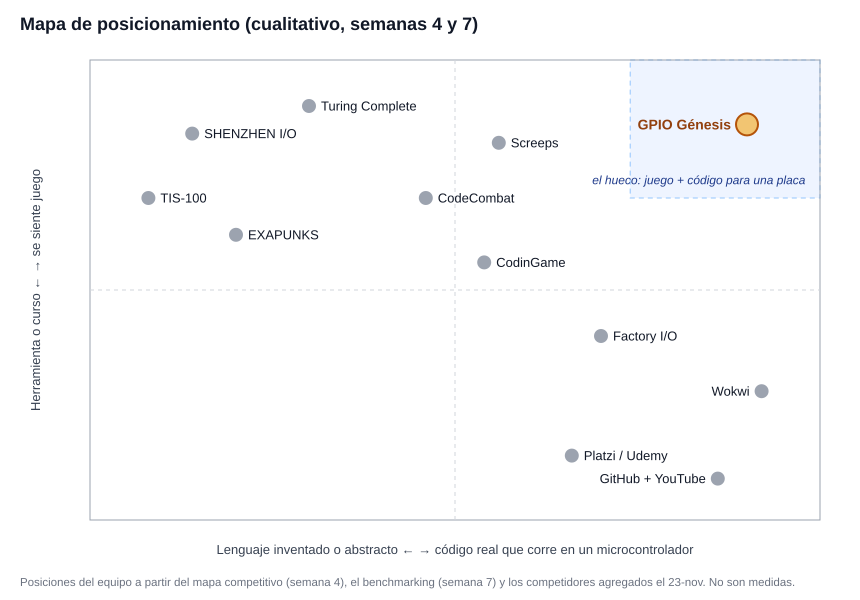
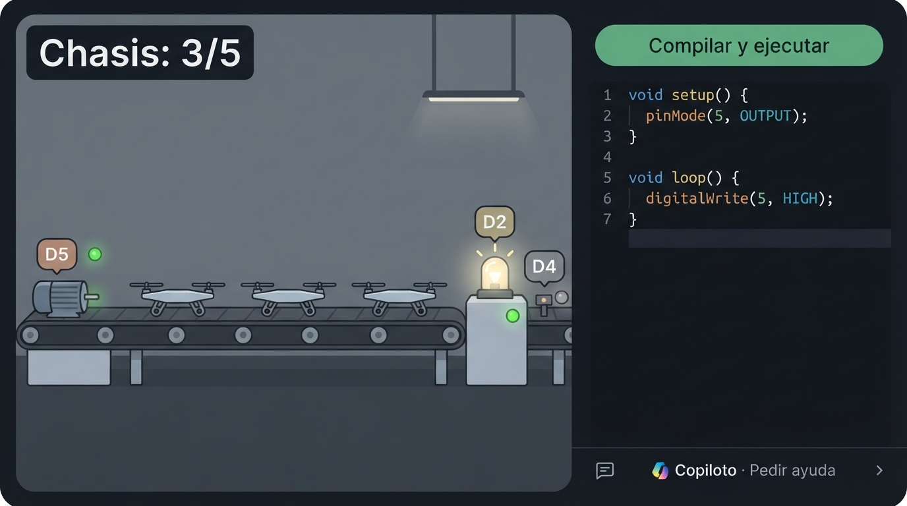
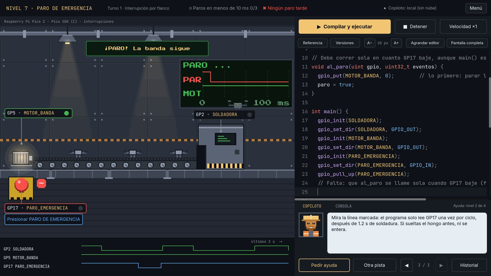
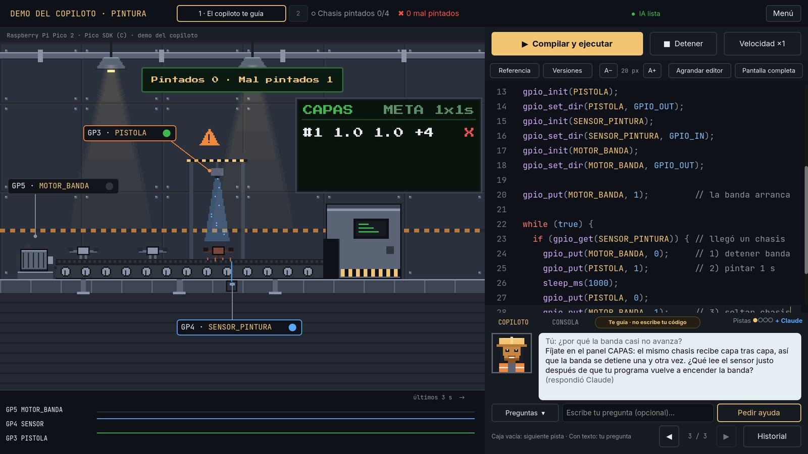
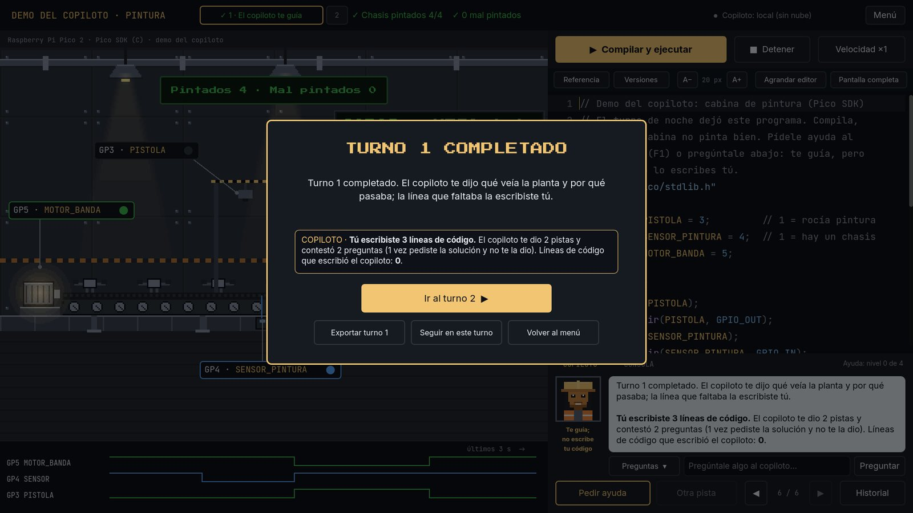
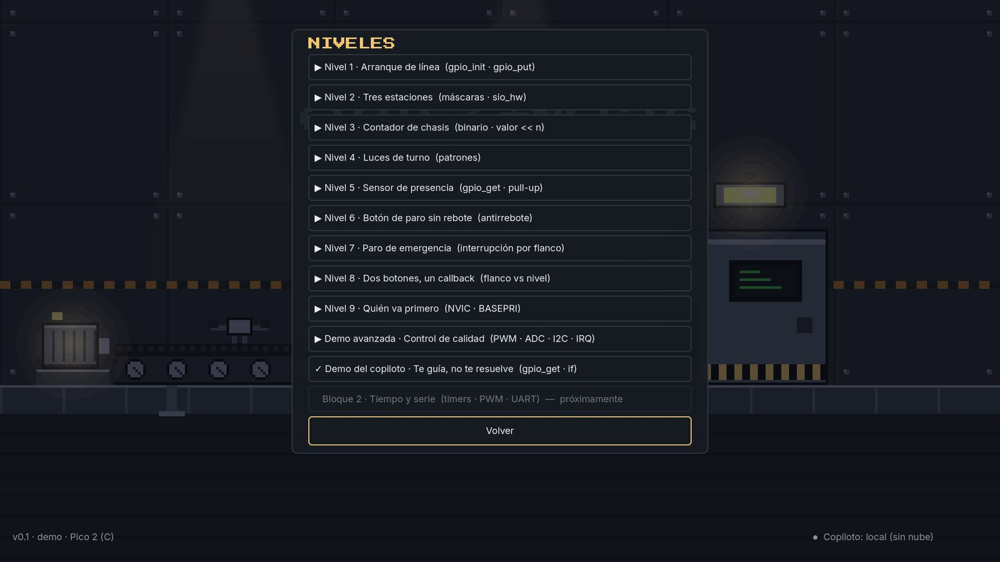

Proyecto final: GPIO Génesis
Equipo: José Carlos y Yael · Curso: Proyectos de Ingeniería 4 · Última actualización: 25 de noviembre de 2026
Esta es la memoria del proyecto: la guía que llenamos semana a semana, el plan de negocio que puede leer alguien que no nos conoce y el registro contra el que se califica. Cada sección empieza con una ficha (versión y fecha, decisión, evidencia, qué cambió y qué queda abierto). Los detalles largos están en bloques que se abren con un clic y en los anexos.
Cómo leer esta página
- Ruta del evaluador (10 min): §0 (1 min) → §5 (1) → §13 (2) → §17 (2) → §18 (2) → §21 (1) → §20 (1).
- Para un inversionista: resumen §0 · problema §2, §3 · solución §5, §9 · mercado §4 · modelo de negocio §13 · operación §11 · finanzas y economía unitaria §14, §15 · legal §16 · tracción §18, §19 · equipo §1 · riesgos y siguientes pasos §22.
- Etiquetas: VERIFICADO = tiene fuente o prueba enlazada · HIPÓTESIS = afirmación sin evidencia todavía · SUPUESTO = número que pusimos nosotros · POR VERIFICAR = falta confirmarlo con una fuente oficial · ESTIMADO = precio aproximado que falta cotizar · PENDIENTE = no se ha hecho.
- En los requerimientos: ✅ cumple · ⚠️ parcial · ❌ no cumple · ⏳ pendiente de probar.
Rúbrica del curso y dónde está cada criterio
| Criterio | Peso | Se muestra en | Secciones | Nuestro caso |
|---|---|---|---|---|
| Producto físico funcionando con IA | 30% | Demo de 7 min | 7, 8, 9, 10, 11, 17, 21 | Desde la semana 5 el producto es 100% digital: el "artefacto" es la Raspberry Pi Pico 2 virtual y la fábrica del juego. Lo más cercano a lo físico es el main.c que el juego exporta para una Pico 2 real, que todavía no se prueba en una placa (§8). |
| Aplicación conectada al producto | 25% | Demo de 7 min | 8, 12, 17, 18 | El juego para PC con su copiloto (pistas locales + Claude en la nube). |
| Landing page de lanzamiento | 15% | Demo (tramo de compra) | 19 | Publicada, con pre-registro (Google Forms) y GoatCounter; faltan visitas y registros. |
| Pitch | 15% | Pitch de 3 min y retroalimentación | 0, 2, 5, 13, 15, 20 | Guion listo en §20; falta el video. |
| Documentación técnica y BOM | 10% | Solo la página | 3, 4, 6, 7, 8, 11, 13–16, 18 | Esta página y sus anexos. |
| Entregables semanales y proceso | 5% | Página y repositorio | 1, 10, 21, 22, Anexo B | Semanas 1–9 publicadas. El código del juego no se publica (decisión del equipo); la demo está en un Release de GitHub. |
La evaluación final dura 15 minutos: 3 de pitch, 7 de demo y 5 de retroalimentación.
0. Resumen ejecutivo
v1 · 24-nov-2026
- Decisión: presentamos GPIO Génesis como un juego para PC de $249 MXN, con el bloque 1 del curso (GPIO) completo y un copiloto que guía sin resolver.
- Evidencia: el juego (9 niveles + 2 demos + el proyecto del copiloto, 834 pruebas automáticas al 24-nov), los Excel de la semana 7 y la landing (§12, §14, §19).
- Qué cambió: primera versión del resumen.
- Queda abierto: pruebas con usuarios, medir el tiempo de respuesta de la IA (los tokens ya se midieron, §14) y las visitas de la landing, video del pitch y video de respaldo de la demo.
 GPIO GÉNESIS — juego de PC para aprender a programar microcontroladores.
GPIO GÉNESIS — juego de PC para aprender a programar microcontroladores.
Propuesta de valor (22 palabras): Aprende C/C++ para microcontroladores arrancando una fábrica de drones: si tu código falla, ves por qué; si funciona, va a tu portafolio.

| Cifra clave | Valor | Fuente |
|---|---|---|
| Mercado alcanzable | 1,100 copias al año (SOM de 2,200 en 2 años) de un SAM de 219,000 estudiantes de ingeniería que juegan simuladores | §4 · HIPÓTESIS (cálculo de la semana 4) |
| Precio | $249 MXN, pago único en PC; Copiloto Pro opcional a $49 MXN/mes | §14 |
| Economía unitaria | $173.44 de contribución por copia (después del 30% de Steam y $0.86 de IA); equilibrio con 322 copias contando nuestras horas o 49 contando solo el dinero que sale del bolsillo (con el margen del 10% que toma Pro; solo con el juego serían 343 y 52) | §14, §15 · SUPUESTOS del modelo |
Enlaces: repositorio · landing page · video del pitch (PENDIENTE) · video de respaldo de la demo (PENDIENTE) · demo descargable (Release de GitHub).
Estado, en una oración: el juego ya funciona en PC con los 9 niveles del bloque 1 y la demo del copiloto, pero con usuarios solo tenemos una prueba informal de la versión sin tutorial (4 de 5 terminaron el nivel 1), y de la IA en la nube ya sabemos que responde con una clave real y cuánto cuesta (≈ US$0.00032 por consulta, promedio de 10); falta medir el tiempo de respuesta. La landing y la demo ya están publicadas, pero todavía sin visitas medidas.
Parte I. Oportunidad y mercado
1. Equipo
v2 · 25-nov-2026 (v1: 24-nov)
- Decisión: somos dos personas; la página del curso y el repositorio los llevamos entre los dos; José Carlos, el desarrollo del juego; Yael, el modelo financiero, las entrevistas y las pruebas con usuarios; las sesiones de trabajo con IA y las decisiones de producto, juntos.
- Evidencia: About me, los commits del repositorio, las decisiones firmadas por los dos en la semana 6 y el acuerdo de colaboración que firmamos los dos (abajo).
- Qué cambió: (24-nov) primera versión de esta sección. Después firmamos el acuerdo de colaboración; en él Yael queda a cargo de las pruebas con usuarios (§18).
- Queda abierto: nada en esta sección.
| Integrante | Formación | Intereses | Rol en el proyecto |
|---|---|---|---|
| José Carlos | Ingeniería Mecatrónica, 5º semestre; cursa Sistemas Embebidos | Tecnología, física, videojuegos; le gustaría trabajar en control o robótica | Parte de la página del curso y del repositorio, desarrollo del juego con Claude Code y parte de las sesiones de trabajo con IA |
| Yael | Ingeniería Mecatrónica, 5º semestre (20 años); no ha llevado Sistemas Embebidos | Llevar ideas del papel a la realidad: diseño mecánico en SolidWorks, programación en C y control de hardware con Arduino. Le interesan el emprendimiento y la comunicación: proyectos que conecten con las personas y resuelvan necesidades reales | Parte de la página del curso y del repositorio, modelo financiero (semana 7), entrevistas de la semana 4, parte de las sesiones de trabajo con IA y las pruebas con usuarios (§18) |
Acuerdo de colaboración (firmado por los dos): (1) una reunión fija a la semana para revisar avance y decidir; (2) las decisiones de producto se toman entre los dos y se anotan en esta página con su evidencia; (3) cada sesión de trabajo termina en un commit con mensaje claro; (4) si alguno no puede cumplir una tarea, avisa con 48 horas; (5) esta página dice quién hizo qué. Además fija las responsabilidades de cada uno; que lo que produce la IA se revisa antes de entregarse y que cada quien escribe su propia reflexión; la autoría y propiedad a partes iguales (50/50) del juego, la marca y la documentación, sin que ninguno lo venda, licencie ni registre por su cuenta; la confidencialidad de claves y código; la salida del proyecto (aviso por escrito con 7 días), y que los desacuerdos se hablan primero en la reunión semanal.
¿Quién hizo qué? (con lo que hay en el repositorio)
| Parte | Quién | Evidencia |
|---|---|---|
| Página del curso y repositorio | José Carlos y Yael | Páginas de las semanas y commits del repositorio (Anexo B) |
| Elección del concepto final (Pugh, ronda 2) | José Carlos y Yael | Semana 6, sección 5 |
| Entrevistas de la semana 4 | Yael | Semana 4 |
| Sesiones de trabajo con IA (prompts y salidas de las semanas) | José Carlos y Yael | Páginas de las semanas 3–9 y §21 |
| Modelo financiero (costos, precio, flujo, VPN y equilibrio) | Yael | Semana 7 y sus Excel (Anexo E) |
| Código del juego (Godot) | Escrito en su mayor parte con Claude Code, con revisión y pruebas del equipo | Registro de desarrollo y pruebas del equipo (el código no se publica; resumen en Anexo B) |
| Datos de mercado (TAM/SAM/SOM, competidores) | Perplexity, revisado por el equipo | Semana 4 |
| Renders de los conceptos | Google AI Studio | Semana 6, sección 4 |
Lo que hizo cada IA y lo que corregimos está en §21.
2. Problema y oportunidad
v3 · 24-nov-2026 (v1: semana 2, 4-sep, otro concepto · v2: 18-sep, GPIO Génesis)
- Decisión: atacamos el cruce entre el dolor D2 (bloquearse con un error sin saber por qué) y la ganancia G3 (una habilidad que sirve en el trabajo).
- Evidencia: reporte de oportunidad de la semana 2 y canvas de la semana 4.
- Qué cambió: la oportunidad ya no incluye "validar el código en hardware real": la estación física se descartó en la semana 5.
- Queda abierto: H1 (con qué frecuencia se bloquean) nunca se preguntó en entrevistas (§3).
Mapa Pain-Gain (resumen):
| Lo más intenso | |
|---|---|
| ⭐ Dolor D2 | Enfrentar errores de sintaxis o de lógica sin un entorno que señale dónde está la falla; en el peor caso se reprueba la materia o el proyecto. |
| ⭐ Ganancia G3 | Fundamentos de software y control de hardware que se transfieren al trabajo, no ejercicios de juguete. |
| Cruce | El estudiante no abandona por falta de interés: abandona porque no sabe por qué su código no logra lo que espera. |
La oportunidad en una oración (vigente): existe una oportunidad para estudiantes de ingeniería en México que juegan simuladores y necesitan aprender C/C++ para microcontroladores, porque hoy aprenden en clases que sienten como trámite, los juegos de programación usan lenguajes inventados y las herramientas que simulan la placa no les explican por qué su código no hace lo que esperan.
Criterios de selección y alternativas descartadas
Los criterios los reconstruimos de los reportes de las semanas 2 y 2.1: (1) un dolor que se puede verificar con datos y con usuarios a los que tenemos acceso; (2) que dos personas lo puedan construir en un semestre; (3) sin certificaciones médicas o legales ni ventas B2B de 12–18 meses; (4) que aproveche lo que sabemos (sistemas embebidos).
| Alternativa | Cuándo | Por qué se descartó |
|---|---|---|
| Estación Total (monitor sin contacto para niños enfermos) | Semana 2 | Riesgo clínico y legal de prometer certeza sobre la salud de un niño; competencia gratuita de apps que convierten un teléfono viejo en cámara (idea descartada) |
| El Pulso Matutino / "Buendía" (sensor de agua y marco digital para adultos mayores) | Semanas 2.1 y 3 | La dejamos porque se parecía al proyecto de otro equipo del curso, y no llegó a entrevistas. GPIO Génesis salió de la clase de Sistemas Embebidos que lleva José Carlos (semana 2.1, semana 3) |
| Estación de pruebas física (ESP32 + sensores) dentro de GPIO Génesis | Semana 5 | Su precio mínimo pasaba de $3,000 MXN: era otro producto para otro cliente (laboratorios), y el segmento nunca pidió hardware (semana 5, sección 0) |
| API de Arduino-ESP32 en el juego | 8-nov | El curso LIIE1214 usa la Raspberry Pi Pico 2 con el Pico SDK; Arduino quedó solo en el nivel 1 |
| Compilar el código del jugador con clang → WebAssembly | 5-nov | Pesaba cientos de MB, había que compilar una extensión de Godot y los errores no salían en español; se cambió por un intérprete propio (§8) |
Evidencia de deseabilidad (semana 2)
- Pago por soluciones imperfectas — VERIFICADO (fuentes secundarias): kits de Arduino/Elegoo de $600 a $8,270 MXN; Platzi ~$4,227 MXN al año.
- Tamaño del segmento — VERIFICADO: ~459,000 estudiantes de Ingeniería, Manufactura y Construcción en solo 6 estados (ANUIES 2024–2025).
- Costo observable — VERIFICADO (literatura): 28–50% de reprobación o abandono en cursos introductorios de programación.
- Comunidades activas — VERIFICADO: foros y repositorios de aprendizaje con miles de estrellas.
- Con usuarios: 4 de 4 entrevistados juegan simuladores y la queja es que la clase "se siente formal" (§3).
3. Usuario y evidencia de campo
v2 · 24-nov-2026 (v1: semana 4, 18-sep)
- Decisión: el segmento es "estudiantes de ingeniería de 18–25 años que juegan simuladores y quieren aprender C/C++ sin que se sienta como clase".
- Evidencia: 4 entrevistas (semana 4); las notas crudas van en el Anexo D.
- Qué cambió: marcamos qué hipótesis de la semana 2 se confirmaron, cuáles se ajustaron y cuáles nunca se probaron.
- Queda abierto: las entrevistas evaluaron un juego de granja, no la fábrica de drones; el tema sigue siendo HIPÓTESIS.
Síntesis de las 4 entrevistas (anónimas):
-
«Como un pasatiempo… no como una clase formal.» — un entrevistado, sobre cómo quiere aprender a programar.
-
«C++ se utiliza en todos los trabajos de hoy en día.» — un entrevistado, sobre por qué le interesa.
- 4 de 4 juegan simulación o sandbox (sobre todo Minecraft). 3 de 4 pagarían entre $100 y $400 MXN; uno espera precio de juego grande ($1,000–1,500). La credibilidad del equipo pesa para comprar, y la demo debe enganchar sin regalar el contenido.
| Hipótesis | Estado | Evidencia |
|---|---|---|
| Juegan simuladores o sandbox | ✅ Confirmada | 4 de 4 |
| Aprender debe sentirse como pasatiempo | ✅ Confirmada | Cita de un entrevistado |
| Lo ven como "comprar un juego", no como un servicio | ✅ Confirmada | 3 de 4 → pone en riesgo a Copiloto Pro (§13) |
| H3: pagarían $199–299 MXN | 🔄 Ajustada | El rango real es $100–400 (3 de 4); uno espera $1,000–1,500 |
| H1: se bloquean 2–3 veces por semana con código + hardware | ⏳ Sin probar | No se preguntó |
| H2: prefieren que les expliquen el error en términos físicos | ⏳ Sin probar | Se prueba en la tarea 2 de §18 |
| El tema "fábrica de drones" atrae | ⏳ Sin probar | Se entrevistó con un concepto de granja |
| Instituciones pagarían US$7–25 por alumno al año | ⏳ Sin probar | Nadie de una universidad entrevistado |
Segmento en cuatro capas (VERIFICADO / HIPÓTESIS)
| Capa | Dato | Estado |
|---|---|---|
| Demográfica | Estudiantes de ingeniería (industrial, sistemas, mecatrónica) | VERIFICADO parcial: 1 de 4 confirma ingeniería industrial |
| Demográfica | 18–25 años | HIPÓTESIS |
| Conductual | Juegan simulación/sandbox | VERIFICADO (4/4) |
| Conductual | Aprenden C++ en clase y la sienten aburrida en temas densos | VERIFICADO |
| Conductual | Hoy no usan ninguna herramienta gamificada de C++ | HIPÓTESIS |
| Psicográfica | Les mueve la empleabilidad ("C++ se usa en todos los trabajos") | VERIFICADO |
| Psicográfica | Confían si el equipo es creíble; la demo debe enganchar sin regalar | VERIFICADO |
| Económica | Pagarían $100–400 MXN | VERIFICADO (3/4) |
| Económica | Deciden solos la compra | HIPÓTESIS |
Hipótesis críticas pendientes: (1) que el tema de drones y el copiloto que pregunta en lugar de responder se sientan como ayuda y no como estorbo; (2) que alguien deje su correo, y después pague, por $249; (3) que 10% compre Copiloto Pro. Las tres se miden en §18 y §19.
4. Mercado y competencia
v2 · 24-nov-2026 (v1: semana 4, 18-sep)
- Decisión: el mercado inicial es México y el competidor más peligroso es el sustituto gratuito: GitHub + YouTube (y, como producto, Wokwi).
- Evidencia: canvas de mercado de la semana 4 y benchmarking de la semana 7.
- Qué cambió: agregamos Wokwi, Screeps, Factory I/O y CodinGame, y anotamos que el TAM de la tabla no sale de su propia cadena de filtros.
- Queda abierto: una fuente directa del % de estudiantes de ingeniería que juegan sandbox.
| Personas | Valor anual | Cómo se obtuvo | |
|---|---|---|---|
| TAM | 380,000 | $95,000,000 MXN | INEGI/CONAPO (18–24 años), SEP (matrícula 2025–26), The CIU (gamers en México), vía Perplexity · HIPÓTESIS: el cálculo directo da 229,000 (1.27 M estudiantes STEM × 60% juegan × 30% prefieren sandbox) |
| SAM | 219,000 | $54,750,000 MXN | TAM × 90% urbano con smartphone × 80% canal digital en español × 80% acepta precio indie |
| SOM | 2,200 en 2 años (1,100/año) | $275,000 MXN/año | Steam + orgánico (TikTok, YouTube, Discord); piloto en Puebla, CDMX, Guadalajara y Monterrey; equipo de 2 personas |
Con el TAM directo (229,000) el SAM bajaría a ~132,000 y el SOM sería 1.7% del SAM en lugar de 1.0%. El SOM, que es lo que usa el modelo financiero, no cambia.

Competidores directos, indirectos y sustitutos
| Tipo | Quién | Precio | Por qué no resuelve lo mismo |
|---|---|---|---|
| Directo | SHENZHEN I/O, TIS-100, EXAPUNKS | US$14.99 / ~$119 / ~$340 MXN | Lenguaje ensamblador inventado: no sirve en una placa real |
| Directo | Turing Complete | US$19.99 | Enseña arquitectura de computadoras, no a programar periféricos |
| Indirecto | CodeCombat (y CodinGame) | CodeCombat: gratis + US$9.99 al mes | Código real, pero sin microcontroladores ni fábrica |
| Indirecto | Screeps | Pago | Código real (también C/C++ vía WebAssembly), pero de estrategia, no de embebidos |
| Indirecto | Factory I/O | Licencia | Fábrica 3D para aprender PLC, no C para microcontroladores |
| Indirecto | Wokwi | Gratis; Hobby €5.6 al mes | Simula la Pico con el Pico SDK, gratis. Es herramienta, no juego: no guía ni explica por qué falla |
| Indirecto | Platzi, Udemy | ~$4,227 MXN al año / $170–1,530 MXN | Se sienten clase grabada, justo lo que el segmento no quiere |
| Sustituto | GitHub + YouTube | $0 | Costo cero y deja un repositorio real. El más peligroso. Lo atacamos con el portafolio exportable y el diagnóstico visual |
| Sustituto | La clase de la universidad | Incluida en la colegiatura | Percibida como aburrida y desconectada |
Lienzo estratégico (cuatro acciones)
- Eliminar: el lenguaje inventado (el segmento quiere C/C++ que sirva en el trabajo).
- Reducir: el precio frente a los cursos ($249 contra $1,500–4,200 MXN).
- Incrementar: la conexión con la industria y la retroalimentación visual inmediata (la fábrica muestra qué hace tu código).
- Crear: el portafolio exportable (
main.c+CMakeListspor turno) y la profundidad de sistemas embebidos reales (interrupciones, prioridades del NVIC, registros del RP2350).
Puntuaciones del lienzo en la semana 4, sección 4. Advertencia que sigue vigente: en "C/C++ real" empatamos con lo gratuito; la diferencia tiene que venir del diagnóstico y de la experiencia.
5. Propuesta de valor y oferta
v2 · 23-nov-2026 (v1: semana 4, 18-sep)
| Propuesta de valor (lo que gana el estudiante) | Oferta técnica (lo que le entregamos) |
|---|---|
| Aprende C/C++ para microcontroladores arrancando una fábrica de drones: si tu código falla, ves por qué; si funciona, va a tu portafolio. | Juego para PC con Windows. 9 niveles del bloque 1 del curso (GPIO, máscaras de bits, antirrebote, interrupciones y prioridades del NVIC) + demo avanzada (PWM, ADC, I2C) + demo del copiloto. Se programa en C o C++ con el Pico SDK para una Raspberry Pi Pico 2 virtual. Copiloto con 4 pistas locales por problema y Claude después de la cuarta. Cada turno se exporta como main.c/main.cpp + CMakeLists.txt. $249 MXN pago único; Copiloto Pro opcional, $49 MXN/mes. |
- Pirámide de Bain: nivel funcional (ahorra tiempo, reduce el esfuerzo de entender un error, informa). Puede subir al emocional con la ansiedad de empleabilidad que salió en las entrevistas.
- Evaluación IDEO: Insightful ✅ (el bloqueo no es falta de ganas, es falta de diagnóstico) · Unique ⚠️ (el SDK real y el copiloto que no resuelve nos distinguen, pero Wokwi ya simula la Pico gratis) · Targeted ⚠️ (comportamiento verificado; carrera y edad, en su mayoría hipótesis).
El error de la primera versión
La v1 (semana 4) decía: «El único juego que convierte tu código C++ en portafolio real de automatización, para estudiantes de ingeniería que aprenden sin que se sienta como tarea». Tenía tres problemas: (1) describía el mecanismo y no lo que gana el usuario (confundir característica con valor); (2) "el único" no se puede comprobar, y la Ley Federal de Protección al Consumidor (art. 32) pide publicidad veraz y comprobable; (3) "portafolio real" prometía más de lo que da el juego (programas cortos e iguales para todos). Además, el juego no es solo C++: las plantillas están en C con el Pico SDK, por eso la v2 dice "C/C++".
6. Propiedad intelectual, marca y vigilancia
v2 · 24-nov-2026 (v1: semana 3, 23-sep)
- Decisión: marca mixta GPIO GÉNESIS en las clases 9 y 41; derechos de autor del juego; el diagnóstico con IA no se patenta.
- Evidencia: semana 3: 6 búsquedas fonéticas en el IMPI y vigilancia en Google Patents.
- Qué cambió: en la semana 3 decidimos proteger el copiloto como secreto industrial. El código del juego no se publica, pero las instrucciones del copiloto van dentro del
.exey se pueden extraer; para protegerlas de verdad tendrían que pasar a un servidor propio. - Queda abierto: presentar la solicitud de marca y repetir las búsquedas directamente en SIGA y LATIPAT.
| Búsqueda IMPI (23-sep-2026) | Clase 9 | Clase 41 | Lectura |
|---|---|---|---|
| "GPIO" | 0 marcas con GPIO | 0 | Limpio: es lo que hace registrable la marca |
| "Genesis" | SEGA GENESIS y otras, registradas | 6 "GENESIS" registradas | Saturado; nunca registrar "Génesis" solo |
| "GPIO Genesis" | 0 con GPIO | 0 con GPIO | Registrable como compuesto distintivo (no es opinión legal) |
| Parte del concepto | Libertad de operación en México | Ajuste |
|---|---|---|
| Juego/simulador con C/C++ real | 🟢 Alta | Ninguno; revisar Robotify Labs antes de vender en EE. UU. o Europa |
| Estación física | 🟢 Alta | Ya no aplica: se descartó en la semana 5 |
| Copiloto IA de diagnóstico | 🟡 Media: CN121583173B (China, 2026) protege comparar ejecución virtual y física | Explicamos en lenguaje natural y comparamos lo esperado con lo simulado, no con hardware real. Sin patente |
Estrategia de protección: marca + derechos de autor del código, el arte y los niveles + velocidad de ejecución. El costo de la solicitud de marca en línea es de unos $2,814 MXN por clase (~$5,628 por las clases 9 y 41; POR VERIFICAR en impi.gob.mx el día del pago). Licencias: Godot (MIT), fuentes Press Start 2P, JetBrains Mono e Inter (OFL), sin dependencias GPL (§16).
Parte II. Producto
7. Especificación del producto (PDS)
v2 · 24-nov-2026 (v1.0: semana 5, 24-sep · RI-07: semana 6)
- Decisión: mantenemos los 26 requerimientos y agregamos la columna de estado con su prueba.
- Evidencia: PDS v1.0 y las pruebas automáticas del juego (834 al 24-nov-2026, resumidas en Anexo B).
- Qué cambió: RI-04 pasó de la API de Arduino-ESP32 a la del Pico SDK; RF-01 se cumple con un intérprete propio en lugar de clang; RI-07 se agregó desde la semana 6; RF-07 (24-nov): la descarga de la demo aparece en la landing solo después del pre-registro, para que la página siga con una sola acción (apartar una copia); la demo (
GPIO_Genesis_demo.exe) está en el Release de GitHub desde el 25-nov; RD-05 se cumple con el costo medido el 25-nov (§14). - Queda abierto: 7 cumplen, 11 parcialmente, 1 no cumple y 7 están sin probar: casi todos los pendientes necesitan usuarios o una PC mínima.
Producto de primera iteración (definición vigente): un solo .exe de 110 MB para Windows, con los 9 niveles del bloque 1 y 2 demos, el compilador incluido, el copiloto (4 pistas locales + Claude con la clave del jugador) y guardado local, sin cuenta. La demo gratis (nivel 1, demo del copiloto, proyecto del copiloto y demo avanzada) es otro .exe que se descarga del Release de GitHub; la landing da el enlace después del pre-registro. La versión completa no se publica. Criterio de éxito (RI-01): 4 de 5 estudiantes del segmento terminan el nivel 1 sin ayuda en 20 minutos o menos.
Tabla completa de requerimientos con estado
| ID | Requerimiento | Verificación | Estado | Prueba / evidencia |
|---|---|---|---|---|
| RF-01 | Compilar y ejecutar el C/C++ del jugador en el MCU virtual sin instalar nada | 30 programas (15 válidos, 15 con error) | ✅ | Pruebas de lenguaje (92, Anexo B); 41 programas de C dan la misma salida que gcc y 14 de C++ la misma que g++. Se usó la suite, no el set de 30 |
| RF-02 | Cada escritura o lectura de pin se refleja en la fábrica en el mismo ciclo | Pin a 1 Hz y PWM por 60 s | ✅ | Pruebas de periféricos (143, Anexo B) y trazas en pantalla |
| RF-03 | Validar el nivel e indicar qué objetivo falló | 1 solución + 3 fallas por nivel | ✅ | Prueba de niveles (364, Anexo B): soluciones de referencia y errores típicos de los 9 niveles |
| RF-04 | El copiloto explica en español la causa física, marca la línea y no da la solución completa | Set de 40 errores con rúbrica | ⚠️ | Las 4 pistas locales lo hacen; la respuesta de Claude no se ha evaluado (RD-04) |
| RF-05 | Sin internet: pista local para ≥ 25 patrones; jugar y guardar | 25/25 sin red | ✅ | 79 tipos de problema distintos con 4 pistas cada uno (155 en los 9 niveles y 2 demos del Pico SDK, en los archivos de nivel del juego); el guardado es local |
| RF-06 | Sincronizar con la cuenta y exportar las soluciones | 2 niveles en otra PC; exportado compila | ⚠️ | Exportar: sí (main.c/main.cpp + CMakeLists.txt por turno). Cuenta y sincronización: no hay backend |
| RF-07 | La landing permite apuntarse y, ya apuntado, descargar la demo | 10 registros de prueba en la hoja en < 5 s; la descarga funciona en Chrome, Edge y Firefox | ⚠️ | Pre-registro conectado a Google Forms; faltan los 10 registros de prueba. El botón «Descargar la demo gratis» sale solo después del pre-registro (un solo CTA) y apunta a GPIO_Genesis_demo.exe del Release (publicado el 25-nov). La descarga desde la landing ya funciona (la probamos el 25-nov) |
| RD-01 | Compilar y arrancar: P95 ≤ 3 s (300 líneas, PC mínima) | 50 corridas | ⏳ | No medido |
| RD-02 | ≥ 30 fps promedio en la PC mínima | Nivel más grande | ⏳ | No medido |
| RD-03 | Pista local ≤ 200 ms; nube ≤ 8 s | p90 con 5 Mbps | ⚠️ | Local: inmediata (sin red). Nube: sin medir; no hay streaming |
| RD-04 | ≥ 80% de respuestas correctas y 0 soluciones completas | Set de 40 errores | ⏳ | Pendiente; el filtro de la demo bloquea respuestas con código |
| RD-05 | ≤ US$0.006 por consulta e IA ≤ 10% del ingreso neto | Logs de tokens del piloto | ✅ | Medido (25-nov, promedio de 10 consultas): ≈ US$0.00032 por consulta, unas 19 veces menos que el límite; puede variar según el nivel: repetirlo en los niveles grandes y con los logs del piloto (§14) |
| RD-06 | 0 cierres con 20 programas defectuosos | Bucle infinito, división entre cero, fuera de arreglo, recursión | ⚠️ | El MCU detiene accesos fuera de arreglo e ISR que se repiten; el set formal de 20 no se ha corrido |
| RI-01 | 4 de 5 usuarios terminan el tutorial y el nivel 1 sin ayuda | 5 usuarios, ≤ 20 min | ⚠️ | Sin tutorial (P8, 25-nov): 4 de 5 terminaron el nivel 1 en 12 min o menos y 1 lo abandonó, pero no quedó registrado si recibieron ayuda; falta repetirlo con la guía (§10, §18) |
| RI-02 | Resaltado, números de línea y línea del error marcada | 15 programas con error | ✅ | Capturas de §12 y prueba de niveles |
| RI-03 | Todo en español de México, sin traducir las palabras de C | Revisión de cadenas | ⚠️ | Interfaz en español; falta revisar 40 respuestas de Claude |
| RI-04 v2 | API del Pico SDK para la Pico 2 (RP2350); el nivel 1 también con Arduino | Las plantillas y soluciones compilan | ⚠️ | Las 28 plantillas y soluciones pasan gcc -Wall -fsyntax-only con las cabeceras reales del Pico SDK 2.2.0; falta compilar con arm-none-eabi-gcc y probar en una placa |
| RI-05 | Backend HTTPS/JSON con JWT y respuesta por SSE | curl sin token → 401 | ❌ | No hay backend: el juego llama directo a la API de Anthropic, sin streaming (§8) |
| RI-06 | Instalar sin compilador, SDK ni cuenta; ≤ 500 MB | VM limpia de Windows 10 | ⚠️ | Un .exe de 110 MB sin instalador; falta probarlo en una Windows limpia |
| RI-07 | En 1366×768 y 1280×720: código ≥ 14 px con ≥ 20 líneas | Greybox en 4 resoluciones | ⏳ | Existe el ajuste de letra (14–36 px); falta la prueba documentada |
| RR-01 | Primera iteración publicada en itch.io antes de la semana 13 | Build publicado | ⏳ | En itch.io todavía no; la demo está en un Release de GitHub (25-nov) |
| RR-02 | Sin dependencias GPL | Inventario de licencias | ✅ | Godot (MIT), fuentes (OFL), arte y sonidos propios; falta el SBOM formal |
| RR-03 | Costo del piloto ≤ $600 MXN | Facturación | ⏳ | Sin piloto |
| RR-04 | Windows 10/11 en la PC mínima | 2 PCs de estudiantes | ⏳ | No probado fuera de nuestras PCs |
| RR-05 | Aviso de privacidad y nada de nombre o correo al modelo | Revisar 20 peticiones | ⚠️ | La petición a Claude no lleva datos personales (peticion_ia); falta el aviso integral (§16) |
| RR-06 | La clave de la API no va en el cliente; cuota de 10 por hora | Buscar la clave en el .exe |
⚠️ | La clave no viene en el .exe (la pone cada jugador, cifrada en su PC); no hay cuota |
8. Arquitectura del sistema
v2 · 24-nov-2026 (v1: semana 5, 24-sep)
- Decisión: híbrido local primero: todo corre en la PC del jugador y Claude solo entra cuando las 4 pistas locales no alcanzaron.
- Evidencia: el
.exe, las capturas de §12 y el diagrama de abajo. Versión anterior: diagrama de la semana 5. - Qué cambió: intérprete propio en lugar de clang → WebAssembly; Pico SDK en lugar de Arduino-ESP32; 4 pistas locales (antes 2 locales y 2 en la nube); sin backend (Supabase, Edge Function y SSE quedaron en el plan); modelo Claude Haiku 5.5 (antes Haiku 4.5).
- Queda abierto: un backend con cuota antes de vender y medir el tiempo de respuesta del camino a la nube (ya responde con una clave real y los tokens se midieron el 25-nov-2026, §14).


Flujo: (1) el jugador escribe C/C++ → (2) el compilador propio lo convierte en un programa → (3) el MCU virtual lo ejecuta y (4) mueve la fábrica, que le regresa las entradas (botones, sensores) → (5) el diagnóstico compara la planta con los objetivos → (6) el copiloto da la pista que toca → (7) solo después de la cuarta, o con una pregunta libre en la demo, se le pregunta a Claude por HTTPS → (8) al completar un turno se exporta el proyecto.
¿Por qué local primero? (antes "cloud-first")
- Funciona sin internet y sin clave. El segmento estudia con la red del campus, que falla. Las pistas escalonadas (79 tipos de problema, 4 pistas cada uno) cubren los errores típicos de cada nivel sin llamar a nadie.
- El costo de la IA deja de depender de cuánto pregunta cada jugador. Con 4 pistas locales, solo los atorados de verdad llegan a la nube: estimamos $0.86 MXN de IA por jugador en todo el MVP, y con el costo medido el 25-nov saldría en ≈ $0.61 (§14).
- Respeta la regla de no resolver. Las pistas locales las escribimos y probamos nosotros; la nube da "otro ángulo" y, en la demo, pasa por un filtro que no deja pasar código.
Consecuencias: el .exe pesa 110 MB porque lleva adentro el motor de Godot (así no hace falta instalar nada); cada pista hay que escribirla a mano en el JSON del nivel; y, mientras no haya backend, cada jugador pone su propia clave de API, lo que sirve para la demo pero no para vender.
Por qué cada protocolo
| Conexión | Protocolo y formato | Por qué este | Por qué no otro |
|---|---|---|---|
| Juego → Claude | HTTPS POST /v1/messages, JSON (model, max_tokens 400, system, messages) |
Es la interfaz del proveedor; pocas consultas por sesión, iniciadas por el jugador | MQTT o WebSocket no aportan nada a una pregunta y su respuesta |
| Claude → juego | Respuesta completa en JSON (content[0].text) |
Es una respuesta de 2–4 oraciones; con un HTTPRequest de Godot alcanza | SSE (streaming) estaba en la semana 5 para que el texto saliera más rápido; queda para cuando haya backend |
| Juego → disco | progreso.json y copiloto_nube.cfg (cifrado) en user:// |
Sin cuenta ni servidor; la clave no sale de la PC | Supabase (semana 5) solo hace falta para jugar en varias PCs |
| Exportar | Archivos main.c/main.cpp + CMakeLists.txt |
Es lo que un estudiante sube a GitHub y compila con el Pico SDK | Subir directo a GitHub con OAuth (semana 5) no era necesario para la demo |
| Landing → Google Forms | HTTPS POST a formResponse (sin servidor propio) |
Gratis y la hoja de cálculo ya es la lista de pre-registros | Supabase para una lista de espera era de más |
| Landing → GoatCounter | Petición de conteo, sin cookies | Mide visitas y clics sin aviso de cookies | Google Analytics pide aviso de cookies |
9. Diseño del producto
v2 · 24-nov-2026 (v1: semana 6, 1-oct)
- Decisión: concepto "Primer turno": arte de C3 + funciones de C1 + mini-trazas de C2.
- Evidencia: semana 6 (tabla morfológica, 3 conceptos, matriz de Pugh, boceto técnico v2).
- Qué cambió del boceto al juego: etiquetas
D5→GP5(Pico SDK); un solo botón de ayuda en lugar de "Pedir ayuda" + "Otra pista"; osciloscopio en la pared en los niveles 6–9; pestañas por turno, versiones y Referencia (F2). - Queda abierto: el tope de 30 h de arte nunca se midió: el arte sigue siendo provisional (generado por script).
Principios de diseño aplicados (los 7 del curso): affordances (cada máquina lleva la etiqueta de su pin con el mismo nombre que la constante del código, GP5 · MOTOR_BANDA) · contour bias (paneles redondeados y luces cálidas; triángulos y octágonos solo para alertas) · consistencia (un color por tipo de señal en el código, el LED y la traza) · constraints (la plantilla ya trae las constantes; no se ejecuta si no compila) · confirmación (LED y traza → palomita del objetivo → banner y copiloto) · costo-beneficio (el pixel art cuesta ~28 h más y lo elegimos porque "se siente juego" pesa 15%) · ciclo de desarrollo (boceto → crítica con IA → v2 → juego).
Matriz de Pugh (deseabilidad 55%; regla: ≥ 40%): ronda 1 contra el datum C1 → C3 −40, C2 −60. Ganó el concepto convencional porque era el más claro. Ronda 2: la combinación final queda +5 contra C1, con los mismos pesos.

10. Prototipos y evidencia
v2 · 25-nov-2026 (v1: 24-nov)
- Decisión: cada prototipo respondió una pregunta técnica o de experiencia; el siguiente ciclo tiene que ser con usuarios.
- Evidencia: semanas 6–7 y las capturas fechadas de §12 y de la semana 8.
- Qué cambió: (24-nov) primera versión de esta sección. (25-nov) se agregó P8: la primera vez que cinco personas (cuatro estudiantes de Ingeniería Mecatrónica y un profesor) probaron la versión sin tutorial se perdían mucho, y por eso se agregó la guía para quien empieza.
- Queda abierto: P8 es el único prototipo probado con usuarios: cinco personas y su tiempo en el nivel 1, pero con la versión sin tutorial y sin el protocolo de §18 (no quedó registrado si alguien recibió ayuda). Repetirla con la guía es lo primero de §18.
| # | Fecha | Pregunta | Tipo · resolución | Qué se construyó | Evidencia | Aprendizaje → cambio de diseño |
|---|---|---|---|---|---|---|
| P1 | 1-oct | ¿Qué estilo deja ver qué pin mueve qué máquina y "se siente juego"? | Forma/experiencia · baja | 6 renders con IA (menú y nivel 1 de 3 conceptos) | Evaluación de nosotros dos (semana 6) | C1 era el más claro y C3 el que más gustaba → concepto combinado |
| P2 | 1-oct | ¿El boceto aguanta 6–8 máquinas y 4 resoluciones? | Función · baja | Boceto técnico v1 + crítica con IA | 3 problemas críticos | Etiquetas compactas, zona segura 384×240, disparador del copiloto a los 10 s |
| P3 | 5-nov | ¿Podemos ejecutar el código del jugador dentro del juego? | Función · alta | Nivel 1 jugable con intérprete propio (API de Arduino) | 44 pruebas del intérprete + 23 de humo | Intérprete en GDScript en lugar de clang → WebAssembly |
| P4 | 8-nov | ¿Se puede enseñar con la API del curso? | Función · alta | Nivel 1 con el Pico SDK para la Pico 2 | Pruebas de Pico SDK; captura del 8-nov | El Pico SDK pasa a ser la opción por defecto (RI-04 v2) |
| P5 | 21–22 nov | ¿El simulador reproduce tiempos como el chip (rebote, latencia, prioridades)? | Función · alta | Niveles 2–9, registros del RP2350 y NVIC | 41 programas = gcc; 28 plantillas con las cabeceras reales del SDK | MCU con tiempo exacto por evento y osciloscopio en la pared |
| P6 | 22–23 nov | ¿El copiloto puede guiar sin escribir el código? | Experiencia · alta | Demo del copiloto (cabina de pintura) | Prueba que revisa que ninguno de los ~100 textos lleve código; resumen «líneas que escribió el copiloto: 0» | 4 pistas locales y Claude al final; una sola fila para preguntar |
| P7 | 23–24 nov | ¿Alguien aparta una copia de $249? | Negocio · alta | Landing con pre-registro | Publicada; PENDIENTE medir (§19) | — |
| P8 | 25-nov | ¿Quien no conoce el juego se orienta sin que se lo expliquen? | Experiencia · media | La versión completa sin tutorial ni explicaciones, probada de manera informal | Cinco personas (cuatro estudiantes de Ingeniería Mecatrónica y un profesor) probaron la versión sin tutorial: cuatro terminaron el nivel 1 en 4, 8, 10 y 12 min (8.5 en promedio) y uno se aburrió y lo abandonó. Nos dijeron que se perdían mucho | Guía para quien empieza: recorrido de la pantalla, consejos la primera vez que aparece algo, botón «?» y «Cómo se juega» (detalle abajo) |
P8 · Lo que nos dijeron del juego sin tutorial, y por qué agregamos la guía
Probamos la versión que no traía tutorial ni explicaciones con cinco personas: cuatro estudiantes de Ingeniería Mecatrónica y un profesor. Cuatro terminaron el nivel 1 (en 4, 8, 10 y 12 minutos) y uno se aburrió y lo abandonó; aun así, nos dijeron que se perdían mucho: no es amigable para quien empieza. Mecatrónica es una de las carreras de nuestro cliente número uno (§15), así que el problema apareció justo con quien queremos venderle. Esto fue lo que nos dijeron y qué hicimos con cada punto (la etiqueta es de nuestro propio estado al 25-nov):
| Lo que nos dijeron | Por qué importa | Qué hicimos | Estado |
|---|---|---|---|
| «No es beginner friendly» | Es la hipótesis de RI-01 (terminar el nivel 1 sin ayuda): sin orientación no se cumple | Recorrido guiado de la pantalla (qué hace cada parte y cada botón), consejos que salen una sola vez la primera vez que aparece algo (primera alerta, primer error, el tablero de cada fábrica), botón «?» para repetirlo y Menú → Cómo se juega | ✅ Hecho (25-nov); falta probarlo con alguien que no conozca el juego |
| Más contexto sobre las funciones y las variables: comentar qué hace cada línea de código nueva y cada variable | Quien empieza no sabe qué hace gpio_init ni por qué un pin es una constante |
Las plantillas ya traen comentarios de qué falta y los consejos explican el código de la fábrica | ⚠️ Parcial · Consideración futura: comentar línea por línea el código nuevo de cada nivel y cada variable |
| No esconder la Referencia: tenerla en la pantalla principal como guía | La Referencia es donde está la sintaxis de cada función; hoy se abre en un panel que tapa la planta | Recordatorio de la Referencia al pedir la pista 2 («Insertar en mi código» y luego modificarlo) | ⚠️ Parcial · Consideración futura: dejarla visible en la pantalla principal junto a la planta y el editor |
| Sección introductoria tipo Duolingo que presente los conceptos | Los conceptos (pin, entrada, salida, 1 y 0) se explican hoy dentro del nivel, ya jugando | — | ⏳ Consideración futura |
| Resaltar el error en el editor de código al pedir ayuda o una pista | Hoy la pista dice «línea N» y el jugador tiene que buscarla | La línea de la pista ya se tiñe de color en el editor, pero el fondo es tenue | ⚠️ Parcial · Consideración futura: hacerlo más visible |
Las cuatro mejoras marcadas como consideración futura no entran antes de la entrega: quedan para una siguiente versión, después de ver si la guía basta.
Qué falta para cerrar P8: repetir la prueba con la guía y con el protocolo de §18, y compararla con estos tiempos (4–12 min; 1 de 5 abandonó): registrar quiénes son, cuánto tardan en la primera compilación y dónde se atoran. Esa medición es la tarea 1 y 2 de §18.
Ciclo de aprendizaje en imágenes



11. Manufactura, DFM y circularidad
v1 · 24-nov-2026
- Decisión: en un producto digital, "manufacturar" una copia es exportar el
.exey distribuirlo; el costo por copia es la comisión de la tienda más la IA. - Evidencia: Excel de costos (hoja Costos DFS) y la configuración de exportación del juego (Godot 4.7.2, preset Windows Desktop, plantilla oficial de 64 bits).
- Qué cambió: la revisión DFM bajó el costo variable de $100.95 a $75.56 MXN por copia (−25%).
- Queda abierto: cotizar la firma de código y el dominio; probar la exportación en una Windows limpia.
BOM final (servicios y licencias)
| Componente | Especificación | Precio unitario | Proveedor | Tiempo de entrega |
|---|---|---|---|---|
| IA del copiloto | Claude Haiku 5.5, US$0.10 / US$0.50 por millón de tokens | $0.86 MXN por jugador en el MVP (ESTIMADO) | Anthropic | Inmediato (cuenta y tarjeta) |
| Motor | Godot 4.7.2 (MIT) | $0 | Godot | Inmediato |
| Fuentes | Press Start 2P, JetBrains Mono, Inter (OFL) | $0 | Google Fonts / JetBrains | Inmediato |
| Tienda | Steam Direct | US$100 por juego, una vez + 30% de cada venta | Steamworks | Revisión de Valve: POR VERIFICAR |
| Firma de código | Certificado OV | ~US$99 al año (ESTIMADO) | Autoridad certificadora | Días a semanas por la validación: POR VERIFICAR |
| Backend (al vender) | Supabase Pro | US$25 al mes | Supabase | Inmediato |
| Dominio | gpiogenesis.com | ~US$12 al año (ESTIMADO) | Registrador | Inmediato |
| Página, pre-registro y métricas | GitHub Pages, Google Forms, GoatCounter | $0 | GitHub, Google, GoatCounter | Inmediato |
Volumen y proceso: piloto de 20 jugadores (se les pasa el .exe completo; el Release público solo trae la demo) y lanzamiento de 400 copias en el año 1 (escenario base) en Steam. El proceso es el mismo para 1 o 1,000 copias: exportar con Godot (preset "Windows Desktop", el paquete va dentro del .exe), subir y distribuir. Una versión nueva toma minutos.
| Revisión DFM | Antes (semana 5) | Después (24-nov) |
|---|---|---|
| IA por jugador | $26.25 MXN (300 consultas, todo en la nube con Haiku 4.5) | $0.86 MXN (220 consultas, la mitad o menos a la nube, Haiku 5.5) |
| Comisión de la tienda | $74.70 | $74.70 |
| Costo variable por copia | $100.95 | $75.56 (−25%) |
| "Ensamble" (instalación) | Instalador con compilador clang + cuenta | Un solo .exe, sin cuenta ni instalador |
| Mayor riesgo técnico | Cadena C++ → WebAssembly (60 h estimadas) | Intérprete propio, ya probado |
Las cuatro preguntas de circularidad, traducidas a software
| Pregunta del curso | Versión digital | Respuesta y cambio |
|---|---|---|
| ¿Se puede reparar? | ¿Se arregla una parte sin romper otra? | Cada nivel es un JSON y su fábrica un script aparte; los errores se corrigen con un parche del .exe |
| ¿Módulos reemplazables? | ¿Se cambia una pieza sin rehacer el resto? | El proveedor de IA cambia con una variable (GPIO_MODELO); el intérprete y la fábrica están separados |
| ¿Materiales identificables? | ¿Se sabe de dónde viene cada pieza y su licencia? | Fuentes con su licencia OFL incluida; arte y sonido propios. PENDIENTE: inventario de licencias (SBOM) |
| ¿Se actualiza sin reemplazar? | ¿Crece sin comprar otro juego? | Los bloques 2 y 3 van como actualización; las partidas viejas se siguen leyendo. Además, corre en una PC de 8 GB con gráficos integrados: no obliga a cambiar de computadora |
Cómo reproducir una unidad
El código del juego no se publica; una copia se hace así dentro del equipo:
- Instalar Godot 4.7.2 (versión estándar, no .NET) y sus plantillas de exportación oficiales.
- Correr las 5 suites de pruebas automáticas (Anexo B). Todas deben pasar.
- Exportar con el preset Windows Desktop a
GPIO_Genesis.exe(un solo archivo, ~110 MB). - Abrir el
.exeen una PC sin Godot y revisar que salgan los 9 niveles, las dos demos y el proyecto del copiloto (Estación de empaque). - La demo se sube a un Release de GitHub; para quien la descarga, reproducir una unidad es bajar ese archivo. La versión completa no se publica.
12. Aplicación conectada
v2 · 24-nov-2026 (v1: wireframes, semana 6)
- Decisión: la "aplicación" es el juego: fábrica + editor + copiloto en una sola pantalla.
- Evidencia: el
.exe(Godot 4.7.2) y las capturas de abajo. - Qué cambió: el modelo por defecto pasó a
claude-haiku-5-5(24-nov), el que se usó para costear la semana 7. El.exeya se volvió a exportar con este modelo (24-nov). - Queda abierto: cómo distribuir la versión completa sin publicarla; el Release trae solo la demo y el código del juego no se publica.
Flujo del usuario: abrir el .exe → la primera vez entra directo al nivel 1 con el código al 90% ("2 de 3 sistemas en línea") → escribe una línea → Compilar y ejecutar (Ctrl+Enter) → la banda arranca → ventana «Turno 1 completado» → Exportar turno 1 o Ir al turno 2 → al terminar los turnos, Siguiente nivel. Wireframes del menú, la alerta y la primera vez en la semana 6, sección 8.
Las 4 pistas son locales («Pistas ●●○○»). Arriba a la derecha: «○ IA sin clave · solo pistas».
El objetivo fallido en rojo, el paro marcado en la planta y el osciloscopio con la latencia. (Captura del 22-nov, antes del panel nuevo del copiloto.)

Captura de una prueba automática con respuesta simulada. Con una clave real Claude ya respondió (25-nov), pero falta capturar esa respuesta.


| Estado | Cómo se ve |
|---|---|
| Cargando | Pantalla de inicio de Godot y, la primera vez, el nivel 1 abre solo |
| Normal | Objetivos con ○/✓ arriba, LED y trazas por pin, «● IA lista» si hay clave |
| Alerta | Marcador naranja en la máquina, objetivo en rojo, el copiloto empieza con una pregunta |
| Sin conexión | «● IA sin conexión»: el botón sigue dando las pistas locales y avisa que no pudo hablar con la IA |
| Error | Línea en rojo y mensaje en español en la Consola («Falta ';' al final de la línea 12»); el MCU se detiene con la causa |
Conexión con la nube: protocolo y formato
Petición (resumida) que arma el copiloto del juego:
{
"model": "claude-haiku-5-5",
"max_tokens": 400,
"system": "Eres el copiloto de GPIO Génesis... explica por qué su código no produce lo que espera la planta... no le escribas la solución completa... texto plano, sin Markdown.",
"messages": [{"role": "user", "content": "Turno: ...\nObjetivos: ...\nMáquinas del nivel: ...\nCódigo del estudiante: ...\nDiagnóstico del juego: {...}\nPistas que ya leyó: ..."}]
}
https://api.anthropic.com/v1/messages con las cabeceras x-api-key (la clave del jugador) y anthropic-version: 2023-06-01. No lleva nombre, correo ni ningún dato del jugador.
Cómo correrlo: descargar GPIO_Genesis_demo.exe del Release y abrirlo con doble clic (si Windows avisa, «Más información» → «Ejecutar de todos modos»). La demo trae el nivel 1, la demo del copiloto, el proyecto del copiloto y la demo avanzada; los 9 niveles se ven en la demo en vivo. Para la IA: Menú → Opciones → Copiloto en la nube, pegar una clave de Anthropic, Guardar y Probar conexión.
Limitaciones conocidas
- El código lo ejecuta un intérprete: no es el compilador de ARM. Falta comprobar en una placa que los
main.cexportados compilan y corren igual. - C++ sin
template,new/delete,std(cout,vector), herencia ni excepciones; el error dice qué usar en su lugar. - Sin UART, SPI ni watchdog en niveles todavía (el simulador ya los tiene); bloques 2 y 3 sin niveles.
- Solo Windows; sin cuenta ni guardado en la nube; cada jugador necesita su propia clave para la IA.
- Arte y sonidos provisionales, generados por script.
- El
.exeno está firmado: Windows SmartScreen mostrará una advertencia al abrirlo.
Parte III. Negocio
13. Business Blueprint
v1 · 24-nov-2026 (modelo de ingresos: semana 7, 22-oct)
- Decisión: dos capas: juego de pago único + Copiloto Pro opcional.
- Evidencia: semana 7, secciones 2 y 3, y modelo financiero (hoja Benchmark).
- Qué cambió: primera versión del lienzo de 8 cajas.
- Queda abierto: Pro contradice lo que dijeron 3 de 4 entrevistados ("comprar un juego"); hay que validarlo en el piloto.
| Caja | Contenido | Sección |
|---|---|---|
| Clientes | Estudiantes de ingeniería (18–25) que juegan simuladores y cursan materias de microcontroladores; después, profesores y universidades | §3 |
| Propuesta de valor | Aprende C/C++ para microcontroladores arrancando una fábrica de drones: si falla, ves por qué; si funciona, va a tu portafolio | §5 |
| Oferta | Juego para PC (bloque 1: 9 niveles + 2 demos) con copiloto y exportación al portafolio | §5, §12 |
| Modelo de ingresos y precio | $249 MXN pago único (Steam) + Copiloto Pro $49 MXN/mes (Stripe), opcional | §14 |
| Canales | Demos en salones con QR → landing; GitHub, YouTube y TikTok orgánicos; la demo en el Release de GitHub, el .exe completo directo a los 20 del piloto y Steam para el lanzamiento |
§15, §19 |
| Costos | Horas del equipo ($50,597 MXN el MVP, contando horas), comisión de Steam (30%), IA ($0.86 por jugador), lanzamiento y nube del año 1 ($8,943 MXN: cuota de Steam, firma, dominio y Supabase Pro) | §14 |
| Socios | Anthropic (IA), Godot (motor), Raspberry Pi (Pico SDK, solo como referencia de la API), Valve (Steam); posibles: profesores de Sistemas Embebidos | §11, §16 |
| Equipo y recursos | 2 estudiantes de mecatrónica (uno lleva Sistemas Embebidos); Claude Code para programar; 834 pruebas automáticas | §1, §21 |
Benchmarking de 3 ofertas parecidas (precios del 22-oct-2026)
| Oferta | Qué vende | Quién paga y cuándo | Precio | Fricción |
|---|---|---|---|---|
| SHENZHEN I/O | Juego de puzles con microcontroladores inventados | El jugador, una vez | US$14.99 (~$262 MXN) | Lenguaje ficticio, en inglés |
| Turing Complete | Juego de construir una computadora | El jugador, una vez | US$19.99 (~$350 MXN) | Arquitectura, no periféricos; en inglés |
| Wokwi Hobby | Simulador web de Arduino, ESP32 y Pico | El usuario, cada mes (el plan gratis ya simula) | €5.6 al mes (~$115 MXN) | Herramienta, no juego: no guía ni motiva |
Qué predomina: los juegos cobran una vez ($120–350 MXN); las herramientas, suscripción ($115–175 MXN/mes). Lo que nadie cobra: la ayuda personalizada mientras aprendes, que es lo que intenta cobrar Copiloto Pro.
Reto de diseño del modelo: el juego tiene final. Cuando el jugador termina los niveles (o el semestre) deja de tener razón para pagar Pro; por eso supusimos 35% de bajas al mes y por eso el juego funciona completo sin Pro.
14. Costos, precio y viabilidad financiera
v2 · 24-nov-2026 (v1: semana 7, 9 y 22-oct)
- Decisión: precio de $249 MXN y alcance de lanzamiento = MVP (los bloques 2 y 3 como actualizaciones).
- Evidencia: modelo financiero, costos y alcance y niveles, con fórmulas visibles.
- Qué cambió (24-nov): los tres Excel quedaron conciliados: 423 h del MVP en 5 ciclos (84.6 h por ciclo), 220 consultas por jugador y plan gratuito de Supabase en el escenario pesimista (semana 7, nota del 24-nov).
- Queda abierto: los tokens ya se midieron en 10 consultas (promedio, varía según el nivel; falta repetir en niveles grandes); comparar las 423 h estimadas con las que de verdad tomó el juego; cotizar firma y dominio; consultar impuestos con un contador.
Costos CREAR y DISTRIBUIR clasificados D / F / S
| Partida | Tipo | MVP | 3 bloques | Por copia |
|---|---|---|---|---|
| Motor del juego | D | $20,571 | $20,571 | — |
| Simulación de periféricos | D | $2,392 | $21,528 | — |
| Niveles del bloque 1 | D | $5,741 | $14,352 | — |
| Copiloto IA (desarrollo) | D | $3,588 | $3,588 | — |
| Niveles de los bloques 2 y 3 | F | $0 | $28,704 | — |
| Arte base y de máquinas | F | $9,927 | $17,103 | — |
| Sonido | F | $2,392 | $4,425 | — |
| Supabase Pro (12 meses) | F | $5,250 | $5,250 | — |
| Firma de código, dominio | F | $1,943 | $1,943 | — |
| IA del copiloto por jugador | D | — | — | $0.86 (MVP) / $6.28 |
| Comisión de Steam | S | — | — | $74.70 |
| Cuota de Steam | S | $1,750 | $1,750 | — |
Montos de desarrollo con 15% de indirectos y 30% de contingencia. Regla del curso: si no cierra, se recortan primero los F; los que no cierran son los niveles de los bloques 2 y 3, que son F.
Costo de la IA (medido, 25-nov): con la clave del equipo hicimos 10 consultas en la demo del copiloto y el contador de la demo registró 21,275 tokens de entrada y 2,047 de salida, US$0.0032 en total (Haiku 5.5). Eso da un promedio de ≈ 2,130 tokens de entrada y ≈ 205 de salida por consulta, ≈ US$0.00032 por consulta, por debajo de la estimación de 3,000 + 400 (US$0.0005). Con ese costo, un usuario activo (5 consultas al día × 30 días) gasta ≈ US$0.05 ≈ $0.83 MXN al mes, y un jugador que usara las 220 consultas del MVP, todas en la nube, ≈ US$0.07 ≈ $1.21 MXN (con la mitad en pistas locales, ≈ $0.61 MXN).
Es un promedio, no un valor fijo
Esta medición es un promedio de 10 consultas. El gasto real puede ser mayor o menor según el nivel: un nivel con más código, más periféricos o un error más largo manda más tokens de entrada, y una pista más detallada genera más tokens de salida. Por eso se toma como referencia, y la cuota de consultas (RR-06) sigue protegiendo el margen aunque el costo suba. Pendiente: repetir la medición en los niveles más grandes del bloque 1. El promedio ya está en Supuestos!B11:B12 del Excel de costos (2,128 y 205 tokens); el $0.86 por jugador de la tabla DFM y del resumen del Excel sigue siendo la cifra más alta, calculada por nivel (2,500–4,000 tokens), y queda como cota conservadora.
| Indicador | MVP (5 niveles) | 3 bloques (22 niveles) | Fuente |
|---|---|---|---|
| Desarrollo por ciclos de aprendizaje (3 / 5 / 8 ciclos) | $30,358 / $50,597 / $80,954 | — | Costos, hoja Desarrollo |
| Costo unitario a 10 copias / 100 copias | $6,030 / $671 | $12,606 / $1,334 | Modelo, Costo unitario |
| Precio: piso cost-plus (40%, 400 copias) → techo value-based | $299 → $350 | $639 → $350 | Modelo, Precio |
| Precio recomendado | $249 (debajo del piso: cubre costos, no el 40% de margen) | $249 (no cubre costos) | semana 7 §4.2 |
| Equilibrio contando horas / solo efectivo | 322 / 49 copias | 697 / 50 copias | Modelo, Equilibrio |
| Mes en que el acumulado se vuelve positivo (base) | 9 | no en 12 meses | Modelo, Flujo 12 meses |
El equilibrio cuenta el margen de Pro: 10% de los compradores × 2.9 meses × $40.85 = $11.67 más por copia (semana 7 §4.3). Solo con el juego ($173.44 por copia) serían 343 copias contando horas y 52 en efectivo.
Alcance costeado y alcance construido: el modelo costea un MVP de 5 niveles (los niveles 1–5). El juego ya tiene los 9 del bloque 1: los niveles 6–9 (antirrebote e interrupciones) completan el bloque. Las 423 h del MVP son estimadas; no las hemos comparado con lo que de verdad tomó.
¿Por qué $249 si el piso es $299? Entra en lo que dijo el segmento ($100–400 MXN), queda entre SHENZHEN I/O ($262) y Turing Complete ($350), y en efectivo se recupera con 49 copias. Lo que no recuperaríamos con menos de 322 copias son nuestras horas.
VPN a 12 meses con una tasa de 15% anual (1.17% mensual), la que propone el curso como costo de oportunidad razonable para un emprendedor en México:
| Escenario de ventas (año 1) | VPN MVP | VPN 3 bloques | VPN MVP, solo efectivo |
|---|---|---|---|
| Pesimista (150 copias, Supabase gratis) | −$28,418 | −$94,866 | +$22,173 |
| Base (400 copias) | +$9,829 (TIR 4.6% mensual) | −$57,892 | +$60,420 |
| Optimista (1,100 copias = SOM) | +$130,561 | +$59,275 | +$181,152 |
Lectura: el MVP es marginalmente viable (positivo en el escenario base, por poco); los 3 bloques, inviables en 12 meses salvo que vendamos todo el SOM. En efectivo nunca perdemos: lo que arriesgamos es tiempo.
15. Go-to-market y economía unitaria
v1 · 24-nov-2026
- Decisión: lanzamiento orgánico empezando por salones de Sistemas Embebidos, con pre-registro gratis y un piloto de 20 jugadores.
- Evidencia: economía unitaria (Excel con fórmulas).
- Qué cambió: primera versión; el Excel nuevo trae un registro de difusión para medir el CAC real.
- Queda abierto: todo lo de esta sección es SUPUESTO hasta tener visitas y pre-registros.
Cliente número uno: estudiante de Mecatrónica o Electrónica de 19–23 años que cursa Sistemas Embebidos con la Raspberry Pi Pico 2, juega Minecraft o simuladores en una laptop con Windows y ha comprado juegos independientes de $100–400 MXN. (Carrera y edad: HIPÓTESIS; juego y precio: VERIFICADO en 4 entrevistas.)
| Canal | Cuándo conviene | Qué aprendemos | Riesgo |
|---|---|---|---|
| Demo de 10 min en un salón + QR a la landing | Ahora: el segmento está concentrado y el profesor da credibilidad | Conversión visita → pre-registro por grupo (?ref=salon) |
Depende de que un profesor nos preste la clase |
| GitHub, YouTube y TikTok orgánicos | Desde el pre-registro; cuesta horas, no dinero | Qué mensaje atrae (problema contra demo) | Lento; compite con contenido gratis |
Demo en el Release de GitHub; .exe completo para el piloto |
Piloto de 20 jugadores, gratis a cambio de 30 min de prueba | Si terminan el nivel 1 solos y si pagarían | Sin firma de código, SmartScreen asusta |
| Steam | Lanzamiento, con la demo gratis | Ventas reales y reseñas | 30% de comisión; revisión y divulgación de IA |
| Licencia escolar (venta directa) | Cuando un profesor lo quiera usar con su grupo | Si las universidades pagan (hipótesis de la semana 2) | Ciclos de venta lentos; facturación |
Plan de preventa y piloto: (1) difundir la landing (ya publicada) y medir visitas, clics y pre-registros; (2) a quienes se registren, invitarlos al piloto de 20 jugadores con el .exe completo (se les pasa directo; el Release público solo trae la demo); (3) al final del piloto, preguntar con compromiso (dejar tarjeta para la compra anticipada o pagar Pro un mes), no con opiniones.
| Métrica | Valor | ¿Medido o supuesto? |
|---|---|---|
| Contribución del juego por copia | $173.44 | SUPUESTO (IA estimada) |
| Churn mensual de Pro | 35% → vida media 2.9 meses | SUPUESTO |
| LTV por comprador (juego + 10% que toma Pro) | $185.11 | SUPUESTO |
| CAC | $44.40 (16 h al mes de difusión × $80 + $200 de traslados ÷ 33 copias al mes) | SUPUESTO |
| LTV ÷ inversión | 4.2× (regla práctica: ≥ 3) | SUPUESTO |
| Payback | 0 meses: el pago único cubre el CAC el día de la compra | SUPUESTO |
| CAC máximo para LTV ÷ inversión = 3 | $61.70 | Derivado |
Sensibilidad (±25% por insumo) y palancas: el CAC y el precio son los que más mueven el resultado (de −24% a +33%); churn y conversión a Pro casi no pesan (±2%) porque Pro es ~6% del LTV. Palancas: subir el precio a $299 → 4.96×; referidos y demos en clase (CAC a la mitad) → 8.3×; licencia escolar de 30 alumnos a $150 → 9.3× por grupo; si la API sube 10 veces → 3.84×. Alerta: con el mismo esfuerzo de difusión pero solo 150 copias al año (pesimista), el CAC sube a $118 y la razón cae a 1.6×: ahí no cumple la regla.
16. Regulación y legal
v1 · 24-nov-2026
- Decisión: antes de vender a alguien de fuera hay que resolver datos personales, términos de venta, la divulgación de IA en Steam, la marca y el alta fiscal.
- Evidencia: fuentes oficiales enlazadas en la tabla; no es asesoría legal.
- Qué cambió: primera versión del checklist.
- Queda abierto: revisar el borrador de aviso de privacidad con alguien que sepa de derecho.
| Tema | ¿Aplica? | Qué exige | Documento o trámite | Quién lo emite | Costo y tiempo | Estatus |
|---|---|---|---|---|---|---|
| Radio y homologación | No | — | — | IFT | — | VERIFICADO: no hay hardware |
| Datos personales | Sí: la landing pide nombre, correo y carrera | Aviso de privacidad desde que se recaban los datos y respetar los derechos del titular | LFPDPPP (DOF 20-03-2025, en vigor el 21-03-2025) | Secretaría Anticorrupción y Buen Gobierno (antes INAI) | $0; redactarlo | POR VERIFICAR: el aviso de la landing es simplificado (ya tiene correo de contacto); falta el integral, con domicilio |
| Seguridad y etiquetado | Probablemente: clasificación de contenido | Mostrar la clasificación del videojuego | Lineamientos Generales del Sistema Mexicano de Equivalencias de Clasificación de Contenidos de Videojuegos (DOF 27-11-2020, en vigor desde el 27-05-2021) | SEGOB | Probablemente "A, todo público" | POR VERIFICAR si aplica a una tienda digital |
| Baterías | No | — | — | — | — | VERIFICADO |
| Licencias de software e IA | Sí | Avisos de licencia (Godot MIT, fuentes OFL); términos comerciales y política de uso de Anthropic | Leer los términos vigentes; SBOM | Cada proyecto / Anthropic | $0 | POR VERIFICAR |
| Venta en Steam con IA | Sí | Declarar en el cuestionario de contenido el contenido generado por IA en vivo y describir los límites que le ponemos | Content Survey de Steamworks | Valve | $0 | POR VERIFICAR: nuestros límites son el filtro de código y las instrucciones del copiloto |
| Términos de venta | Sí | Publicidad veraz y comprobable; reembolsos de la tienda; cancelación de Pro | LFPC, art. 32; términos de Steam y Stripe | PROFECO | $0 | En curso: la landing ya no promete lo que el juego no hace |
| Economía circular | No aplica a un producto digital | — | — | — | — | VERIFICADO; buena práctica en §11 |
| Exportación e impuestos | Sí: Steam vende fuera de México | Alta en el SAT e IVA/ISR de los ingresos | Consulta con un contador | SAT | Por cotizar | POR VERIFICAR |
| Marca | Sí | Solicitud de marca mixta, clases 9 y 41 | Marca en Línea | IMPI | ~$2,814 MXN por clase; meses | POR VERIFICAR |
Borrador de aviso de privacidad integral y términos básicos (revisar antes de usarlo)
Aviso de privacidad. José Carlos y Yael, equipo de GPIO Génesis, son responsables de los datos que dejas en el pre-registro: nombre, correo, carrera y la página de la que llegaste. Los usamos para avisarte del lanzamiento, invitarte al piloto y medir cuánto interés hay. No los vendemos ni los compartimos; se guardan en una hoja de Google Forms a la que solo tenemos acceso nosotros. Puedes pedir que los corrijamos o los borremos escribiendo al correo de contacto de esta página; respondemos en un máximo de 20 días hábiles. Si cambiamos este aviso, lo publicaremos en esta misma página. Domicilio para notificaciones: PENDIENTE.
El juego no pide cuenta ni datos personales. Tu progreso y tu código se guardan en tu computadora. Si pones tu clave de Anthropic y pides ayuda a la IA, el juego envía a Anthropic tu código, el estado del nivel y tu pregunta (nunca tu nombre ni tu correo). La clave se guarda cifrada solo en tu PC.
Términos básicos. El juego es una versión de prueba y puede tener errores. El copiloto puede equivocarse: verifica lo que te diga. El código que escribes y exportas es tuyo. Raspberry Pi, Pico y Arduino son marcas de sus dueños; GPIO Génesis no tiene relación con esas empresas.
Qué falta antes de venderle a alguien de fuera: (1) aviso de privacidad integral con domicilio; (2) un backend con nuestra clave, límite de gasto y cuota (no pedirle su clave al jugador); (3) la declaración de IA en Steam; (4) términos de venta y de cancelación de Pro; (5) la solicitud de marca; (6) el alta en el SAT.
Parte IV. Validación y lanzamiento
17. Integración y pruebas del sistema
v1 · 24-nov-2026
- Decisión: adaptamos las cuatro fronteras y las pruebas T1–T6 del curso a un juego sin hardware.
- Evidencia: las 5 suites de pruebas automáticas (834 al 24-nov-2026: 52 + 92 + 143 + 364 + 183; qué revisa cada una en Anexo B).
- Qué cambió: primera versión; durante esta revisión encontramos que el juego usaba Haiku 4.5 y el costeo Haiku 5.5 (corregido en el código).
- Queda abierto: ninguna de las T1–T6 se ha corrido completa con una persona; con una clave real probamos que Claude responde y medimos los tokens de 10 consultas (25-nov-2026).
Las cuatro fronteras, traducidas:
- F1 · código del jugador → MCU virtual. ¿El programa se comporta como en el chip? 41 programas de C dan la misma salida que gcc y 14 de C++ la misma que g++; las 28 plantillas y soluciones compilan con las cabeceras reales del Pico SDK. Los tiempos (rebote, latencia) no se han comparado con una Pico real.
- F2 · juego → internet. ¿La petición sale y llega a Anthropic? La petición se arma y se revisa en las pruebas (
solo_armar_peticion), y el 25-nov-2026 la mandamos con una clave real y Claude respondió. En 10 consultas medimos ≈ 2,130 tokens de entrada y ≈ 205 de salida por consulta (§14). Falta medir el tiempo de respuesta (T2). - F3 · Claude → respuesta utilizable. ¿Contesta en español, sin código y sin Markdown? Hay filtro de código (demo) y convertidor de Markdown; falta el set de 40 errores (RD-04).
- F4 · juego y landing → lo que ve el usuario. ¿Ve lo correcto a tiempo? Historial, botón e indicadores probados en la prueba de niveles; la landing ya está publicada (falta medir visitas y registros).
| # | Prueba del curso | Versión GPIO Génesis | Criterio | Resultado |
|---|---|---|---|---|
| T1 | Instalación sin ayuda | Descargar el .exe y llegar al nivel 1 |
< 5 min sin intervención | ⏳ PENDIENTE (el Release ya está; falta una persona) |
| T2 | Latencia de punta a punta | Compilar → la planta reacciona; pedir ayuda a la IA → respuesta | ≤ 3 s y ≤ 8 s (RD-01, RD-03) | ⏳ PENDIENTE |
| T3 | Desconexión y recuperación | Cortar el internet 10 min mientras se juega | Sigue con pistas locales, avisa y no pierde progreso | ⚠️ Probado con red simulada en las pruebas; falta en vivo |
| T4 | Autonomía de batería | No aplica (sin batería). Equivalente: rendimiento en la PC mínima | ≥ 30 fps (RD-02) | ⏳ PENDIENTE |
| T5 | Falla de la API de IA | Clave inválida o sin respuesta | Mensaje claro y se queda la pista 4, sin romperse | ✅ En pruebas automáticas (clave falsa y sin conexión); falta con la API real |
| T6 | Operación continua | Sesión de 2 h seguida; cerrar y abrir | Sin cierres; el progreso sigue | ⏳ PENDIENTE |
Errores encontrados, su frontera y su diagnóstico
| Error | Frontera | Diagnóstico | Estado |
|---|---|---|---|
Se veían ** y comillas invertidas en el globo |
F3 → F4 | Claude contesta en Markdown y el globo usa BBCode | Corregido (23-nov): se pide texto plano y se convierte lo que quede |
| Pistas repetidas en el historial | F4 | Cada nueva compilación con el mismo error agregaba otra vez la pista | Corregido (22-nov): el historial vuelve a empezar en la pista 1, sin repetidos |
| Un turno completado no se podía volver a completar | F4 | La revisión no se volvía a disparar | Corregido (22-nov) |
| Dos pruebas de tiempos de periféricos (rebote de 4 ms, misma prioridad 0x80) fallaron en 2 de 9 corridas con la computadora ocupada | F1 (de la prueba) | Probablemente dependen de cuánto tarda cada cuadro (POR CONFIRMAR) | Abierto: pasaron en las otras 7 corridas |
| El juego usaba Claude Haiku 4.5 y el costeo Haiku 5.5 (10 veces más barato) | F2/F3 (costo) | Constante del modelo anterior a la semana 7 | Corregido en el código y en el .exe (24-nov) |
| La landing prometía "se niega a darte la solución" en todo el juego | F4 (promesa) | Solo la demo del copiloto tiene esa regla; en los demás niveles la pista 4 da la línea | Corregido en el texto de la landing (24-nov) |
Qué no funciona todavía y por qué: cuentas y progreso en la nube (no hay backend), cuota de consultas (idem), respuesta en streaming (idem), compilación real (se usa el intérprete) y niveles de los bloques 2 y 3 (tiempo).
Checklist de "listo" (traducido):
- El juego corre en una PC que no es nuestra, sin Godot (hoy solo en nuestras PCs).
- La demo (
GPIO_Genesis_demo.exe) se puede descargar de un Release público (25-nov). - La landing está publicada en internet, con el Google Form y GoatCounter.
- El flujo descargar → jugar el nivel 1 → pedir ayuda → exportar sale sin que intervengamos (falta T1 con una persona).
18. Pruebas con usuarios
v0.1 · 25-nov-2026 — PENDIENTE
- Decisión: hacer 5 sesiones de 30 min: 3 del segmento y 2 de otros equipos. Las lleva Yael (acuerdo de colaboración, §1).
- Evidencia: todavía ninguna sesión con este protocolo. Hay una prueba informal del 25-nov con la versión sin tutorial: cinco personas (cuatro estudiantes de Ingeniería Mecatrónica y un profesor); cuatro terminaron el nivel 1 en 4, 8, 10 y 12 min, uno lo abandonó y nos dijeron que se perdían mucho (§10, P8).
- Qué cambió: adaptamos el protocolo del curso al juego. (25-nov) Después de esa observación el juego trae una guía para quien empieza, así que las sesiones prueban si la guía resuelve el problema: si alguien se pierde, anotar en qué pantalla y en qué minuto.
- Queda abierto: las 5 sesiones. Es lo más urgente: sostiene RI-01, H2 y la señal de compra.
| Min | Qué pasa | Qué se observa |
|---|---|---|
| 0–3 | Guion fijo: «Es un juego para PC. Te voy a pedir tres cosas; piensa en voz alta. Yo no puedo ayudarte.» | Nada del producto se explica |
| 3–10 | Tarea 1: descargar la demo del Release de GitHub y abrir el nivel 1 | Si lo logra solo, tiempo, dudas (incluida la advertencia de Windows) |
| 10–20 | Tarea 2: completar el turno 1 del nivel 1 y decir qué le está pidiendo el copiloto cuando algo falla | Si entiende la alerta y la pista, y qué hace después |
| 20–25 | Tarea 3: encontrar el precio y apartar una copia | Si encuentra el CTA y completa el pre-registro |
| 25–30 | Cierre: ¿cuándo fue la última vez que te atoraste con un programa y qué hiciste? ¿Cuánto pagaste por tu último juego o curso? ¿Te apunto para el piloto? | Compromisos, no opiniones |
Reglas del observador: no ayudar, no explicar, no defender el diseño; si se atora, anotar el minuto y esperar 30 s; ante «¿esto qué hace?», responder «¿qué esperabas que hiciera?».
Registro por sesión (para llenar)
| Sesión | Perfil | Tarea | ¿Sin ayuda? | Tiempo | Errores / dudas | SEQ (1–7) | Cita textual |
|---|---|---|---|---|---|---|---|
| S1 | Segmento | T1 / T2 / T3 | |||||
| S2 | Segmento | T1 / T2 / T3 | |||||
| S3 | Segmento | T1 / T2 / T3 | |||||
| S4 | Otro equipo | T1 / T2 / T3 | |||||
| S5 | Otro equipo | T1 / T2 / T3 |
Después: tasa de éxito sin ayuda, tiempo mediano y SEQ promedio por tarea; hallazgos por severidad (crítico, mayor, menor) con citas; cambios hechos; y la señal de negocio separando compromisos reales (dejó su correo, se apuntó al piloto) de opiniones («sí lo compraría»).
19. Landing page
v2 · 25-nov-2026 (v1: 23–24-nov)
- Decisión: una sola página con un solo CTA, «Apartar mi copia», que lleva a un pre-registro sin pago.
- Evidencia: landing (
docs/gpio-genesis/). - Qué cambió: (24-nov) el beneficio del copiloto ya no promete que «se niega a darte la solución» en todo el juego: eso solo pasa en la demo del copiloto. (25-nov) Publicada con el Google Form, GoatCounter y el correo de contacto; después del pre-registro aparece el botón para descargar la demo del Release. (25-nov, tarde) La nota junto al botón ya no dice «solo tu correo», porque el formulario pide nombre, correo y carrera, y «Qué incluye» suma la guía para quien empieza (§10, P8).
- Queda abierto: medir visitas, clics y pre-registros; los 10 registros de prueba (RF-07; la descarga de la demo ya funciona); reemplazar el video armado con capturas por una grabación real.
URL: https://jc3468.github.io/Proyecto_ing_4/gpio-genesis/. Para la demo, el QR lleva ?ref=qr.
| # | Elemento | Qué tiene |
|---|---|---|
| 1 | Headline | La propuesta de valor v2 (§5) |
| 2 | Visual principal | Captura real del juego dentro de una laptop, con el globo del copiloto |
| 3 | Tres beneficios | Proyectos que compilan para tu portafolio · ves por qué falla tu código · un copiloto que guía sin hacerte la tarea |
| 4 | Demo de ~30 s | Video armado con capturas reales (la página lo dice) |
| 5 | Evidencia | «Como un pasatiempo… no como una clase formal»; 4 de 4 juegan simuladores; 3 de 4 pagarían $100–400 |
| 6 | Precio visible | $249 MXN, pago único, PC con Windows; Pro como opcional |
| 7 | Un solo CTA | «Apartar mi copia» → nombre, correo y carrera → hoja de Google Forms → botón «Descargar la demo gratis» |
Metadatos: title, description, canonical, Open Graph (imagen de 1200×630) y tarjeta de X. Métricas: visitas y clics en el CTA (GoatCounter, sin cookies) y pre-registros (filas de la hoja), con el origen de cada visita (?ref=).
| Métrica | Valor | Desde |
|---|---|---|
| Visitas | PENDIENTE | Publicación |
| Clics en el CTA | PENDIENTE | Publicación |
| Pre-registros | PENDIENTE | Publicación |
| Conversión visita → pre-registro | PENDIENTE | Se calcula sola en el Excel de economía unitaria |
Especificación con la que se hizo
La hicimos con Claude el 23-nov-2026, siguiendo el Prompt 6, parte B, de la semana 9: una sola página para GPIO Génesis, en este orden: headline = propuesta de valor; visual = captura real del juego en una laptop; tres beneficios como resultados, no características; demo de 30 s; evidencia = cita y cifras de las 4 entrevistas; precio visible de $249 pago único; un solo CTA de pre-registro sin pago guardado en Google Forms. Estilo y fuentes del juego, metadatos con Open Graph, métricas de visitas, clics y pre-registros, primero el celular. Sin inventar datos: todo sale de las semanas 4, 7 y 9 o del juego.
20. Pitch y demo
v1 · 24-nov-2026
- Decisión: pitch de 352 palabras que abre con una persona y un costo, y una demo de 7 min con plan B en cada tramo.
- Evidencia: cada cifra del pitch apunta a su sección.
- Qué cambió: (24-nov) primera versión. (25-nov) el problema ahora es un estudiante al que le toca Sistemas Embebidos, no aprende con apuntes ni videos largos, no repasa y reprueba o abandona; la tracción suma la prueba sin tutorial (P8).
- Queda abierto: grabar el video del pitch y el video de respaldo de la demo; tres ensayos con cronómetro.
Guion del pitch (3 min, 352 palabras)
| Parte | Tiempo | Palabras (tope) | Texto | Evidencia |
|---|---|---|---|---|
| Impacto y problema | 0:00–0:35 | 75 (76) | Diego estudia mecatrónica y el próximo semestre le toca Sistemas Embebidos. Le gusta la electrónica, pero no aprende con apuntes ni con videos de dos horas: se aburre y no repasa. Llega la primera práctica, su código compila, la banda no arranca y no sabe por qué. Se atrasa y termina reprobando o dejando la materia. No es el único: entre 28 y 50% de los alumnos reprueba o abandona su primer curso de programación. | Diego es una persona ilustrativa. 28–50%: §2 |
| Solución y por qué nosotros | 0:35–1:10 | 68 (76) | GPIO Génesis es un juego para PC: arrancas una fábrica de drones escribiendo C/C++ de verdad para una Raspberry Pi Pico 2 virtual. Un tutorial de YouTube te da código para copiar; aquí, si tu código falla, la banda se detiene y el copiloto te pregunta qué ves. Somos dos estudiantes de mecatrónica, y uno de nosotros lleva Sistemas Embebidos: el juego enseña lo mismo que esa clase. | §5, §12; contraste con el sustituto: §4; quién lleva Sistemas Embebidos: §1 |
| Mercado y modelo | 1:10–1:45 | 66 (76) | Hay 219 mil estudiantes de ingeniería en México que juegan simuladores. Queremos llegar a 1,100 cada año. Cobramos 249 pesos, pago único, como un juego independiente, no como un curso; el copiloto Pro es opcional. Después de la tienda y de la inteligencia artificial, cada copia nos deja 173 pesos. Con 49 copias recuperamos el dinero que sale de nuestro bolsillo. Con 322, también nuestras horas. | SAM y SOM: §4; $173.44, 49 y 322: §14 (49 y 322 cuentan el margen de Pro) |
| Tracción | 1:45–2:20 | 71 (76) | Hoy funcionan los nueve niveles del primer bloque del curso, con interrupciones y prioridades, cuidados por 834 pruebas automáticas. De cuatro estudiantes entrevistados, tres pagarían entre 100 y 400 pesos por un juego así. En una primera prueba, cuatro de cinco personas terminaron el primer nivel en 4 a 12 minutos; la quinta se aburrió y lo dejó. Por eso agregamos una guía para quien empieza. Lo siguiente: probarla con usuarios. | §17, §3; prueba sin tutorial (cinco personas): §10, P8; la confesión honesta es que uno abandonó y la guía todavía no se prueba con usuarios |
| Equipo | 2:20–2:35 | 25 (32) | Somos José Carlos y Yael, de Ingeniería Mecatrónica. Usamos inteligencia artificial para construir, pero cada nivel lo revisamos contra el SDK real de la Pico. | §1, §7 (RI-04) |
| Ask y cierre | 2:35–3:00 | 47 (54) | Buscamos veinte estudiantes para el piloto y un profesor que lo use con su grupo. En la demo van a ver la fábrica fallar y al copiloto negarse a darnos la solución. GPIO Génesis: si tu código falla, ves por qué; si funciona, va a tu portafolio. | §15, §5 |
Total: 352 palabras (rango del curso: 330–360). Es el mismo guion de la semana 9, sección 5.
Reglas del curso que cumple: abre con una persona y un costo; habla en pesos y horas; una cifra por frase con origen; contrasta con YouTube; una sola confesión; anuncia la demo sin hacerla; cierra con la promesa. Sin «innovador», «plataforma», «solución integral» ni «revolucionario».
Guion de la demo (7 min) con plan B
| Tiempo | Quién opera | Qué se hace y se dice | Plan B |
|---|---|---|---|
| 0:00–0:45 | Narrador | Qué van a ver: un nivel normal, el copiloto, una falla controlada y la compra | Diapositiva con la captura de cada tramo |
| 0:45–3:15 | Operador | El .exe ya abierto. Nivel 1, turno 1: escribir una línea → Compilar y ejecutar → «3 de 3 sistemas en línea». Exportar el turno y abrir el main.c |
Video de respaldo; partida guardada en ese punto |
| 3:15–4:45 | Operador | Demo del copiloto: el programa repinta el mismo chasis (el evento). Preguntas ▾ → «Dame la solución»: se niega y da la pista 2. Pregunta libre → la contesta Claude sin escribir código | Sin red: lo contesta el copiloto local; captura de la respuesta de Claude |
| 4:45–5:45 | Operador | Apagar el Wi-Fi en vivo: «● IA sin conexión», la pista local sigue; volver a prenderlo | Clave inválida a propósito: mensaje claro |
| 5:45–6:30 | Narrador | QR en pantalla → landing en el teléfono del jurado → $249 → «Apartar mi copia» → mostrar la fila nueva en la hoja | Landing abierta en la laptop; captura de la hoja |
| 6:30–7:00 | Narrador | Qué funciona, qué falta (usuarios, backend, firma) y el siguiente paso (piloto de 20) | — |
Opcional si tenemos una Pico 2 del curso: cargar en la placa el main.c que el juego acaba de exportar y prender un LED real. Sería lo más cercano al 30% de "producto físico" de la rúbrica, pero solo si antes lo probamos.
15 minutos antes: laptop cargada y con cargador · .exe congelado (versión anotada) · progreso limpio (Versiones → Restaurar original en los turnos de la demo) · hotspot del teléfono probado · clave guardada y «Probar conexión» en verde · landing abierta y QR impreso · videos de respaldo en el teléfono y la laptop · proyección probada · cronómetro a la vista. Prohibido: depender del Wi-Fi del salón, configurar en vivo o cambiar el .exe ese día.
Video del pitch: PENDIENTE. Video de respaldo de la demo: PENDIENTE (grabarlo un día antes con Win+Alt+R).
Preguntas difíciles de inversionista
| Pregunta | Respuesta corta | Dónde está |
|---|---|---|
| ¿Cuánto cuesta "fabricar" una copia y cómo lo sabes? | $75.56 de costo variable (comisión de Steam $74.70 + IA $0.86); a 10 copias, $6,030 por el desarrollo repartido | §11, §14 |
| ¿Por qué no lo hace Wokwi o Zachtronics? | Wokwi es una herramienta que no guía; Zachtronics usa lenguajes inventados. Ninguno enseña el SDK del curso jugando | §4 |
| ¿Qué pasa si sube el precio de la API? | Con la API 10 veces más cara, LTV ÷ inversión baja de 4.2× a 3.8×; y el juego funciona sin IA con las 4 pistas locales | §8, §15 |
| ¿Cuántos clientes necesitas para no perder dinero? | 49 copias en efectivo; 322 si contamos nuestras horas (con el margen de Pro; solo con el juego, 52 y 343) | §14 |
| ¿Qué necesitas para vender legalmente? | Aviso de privacidad, términos, declaración de IA en Steam, marca y alta fiscal | §16 |
| ¿Qué hace que no cancelen Pro? | No dependemos de Pro (~6% del LTV); el reto es dar algo nuevo cada mes | §13, §15 |
| ¿No es lo mismo que YouTube y GitHub gratis? | Ahí copias código; aquí la fábrica te muestra por qué falla el tuyo y lo exportas a tu portafolio | §4, §5 |
| ¿El C es de verdad? | 41 programas dan la misma salida que gcc y las plantillas compilan con las cabeceras del Pico SDK; falta probar en una placa | §7, §17 |
Parte V. Cierre
21. Uso de IA
v2 · 25-nov-2026 (v1: 24-nov)
- Decisión: la IA nos ayudó a investigar, decidir y construir; las decisiones y las correcciones son nuestras, y aquí está cada una.
- Evidencia: prompts y salidas en las páginas de las semanas 3–7 y el registro de desarrollo del juego, que no se publica: lo que importa de él está resumido en esta sección.
- Qué cambió: (24-nov) primera versión. (25-nov) el costo de la IA ya está medido con 10 consultas.
- Queda abierto: repetir la medición en los niveles más grandes y con los jugadores del piloto (§14).
En el proceso: los cinco prompts que más cambiaron el proyecto
| # | Qué pedimos | Qué contestó la IA | Qué corregimos y por qué |
|---|---|---|---|
| 1 | Semana 2: validar la deseabilidad de GPIO Génesis (Paso 5) | Riesgo técnico alto si construíamos al mismo tiempo compilador, estación física, app y web | Priorizamos el simulador; en la semana 5 quitamos la estación por completo |
| 2 | Semana 4: TAM, SAM y SOM con fuentes (Perplexity) | Se equivocó: calculó 229,000 personas y luego las "redondeó de forma conservadora" a 760,000, sin fórmula | No lo detectamos a la primera. Lo dejamos marcado en la semana 4; la tabla quedó en 380,000, que tampoco sale de la cadena de filtros. El modelo financiero usa el SOM, no el TAM (§4) |
| 3 | Semana 5: arquitectura y costo por consulta (Claude) | Híbrido con la IA en la nube; con 300 consultas la IA se llevaba 15% de cada venta | Agregamos pistas locales y cuota; en la semana 7 pasamos a Haiku 5.5 (0.5%) |
| 4 | Semana 6: criticar el boceto antes del greybox (Prompt 6) | 3 problemas críticos: etiquetas que no escalan, escalado que no cierra y un copiloto sin disparador | Los tres entraron en el boceto v2 y en el juego |
| 5 | Noviembre: construir el juego con Claude Code (niveles, intérprete, copiloto) | Propuso un intérprete propio en lugar de clang → WebAssembly y lo hizo con pruebas | Lo aceptamos para la demo; pedimos el cambio a Pico SDK, la regla de no dar código y el botón único. Un error que le corregimos: en la landing escribió que solo el nivel 1 aceptaba C++, sin revisar el compilador. En realidad todos los niveles aceptan C y C++; el nivel 1 además acepta la API de Arduino |
En el producto
| Pregunta | Respuesta |
|---|---|
| ¿Qué hace el modelo? | Explica por qué el código del jugador no produce lo que espera la planta y qué cambiar, en 2–4 oraciones y en español, sin escribir la solución; en la demo, contesta preguntas libres sin escribir código |
| ¿Dónde corre? | En la nube de Anthropic (Claude Haiku 5.5, claude-haiku-5-5). Todo lo demás (intérprete, MCU, diagnóstico y las 4 pistas) corre en la PC |
| Entradas y salidas | Entra: reglas, turno, objetivos, máquinas, código, diagnóstico y pistas leídas. Sale: texto plano de máximo 400 tokens |
| Costo medido por usuario | Medido (25-nov, promedio de 10 consultas): ≈ US$0.00032 por consulta → ≈ $0.83 MXN al mes por usuario activo y ≈ $1.21 MXN por jugador en todo el MVP si las 220 consultas fueran a la nube (≈ $0.61 con la mitad en pistas locales). El modelo financiero sigue usando las estimaciones más altas ($0.86 por jugador y $1.31 al mes) como cota conservadora (§14) |
| Manejo de fallas | Sin clave: solo pistas locales. Sin internet o con error: mensaje y se queda la pista 4. Respuesta con código en la demo: no se muestra. Markdown: se convierte |
| ¿Por qué sería peor sin IA? | Las 4 pistas locales cubren los errores que imaginamos; la IA responde al código y a la pregunta que de verdad tiene el jugador, con otro ángulo cuando las pistas no bastaron. Sin ella, el jugador atorado después de la pista 4 se queda solo. (El juego funciona sin IA a propósito, para que nunca se vuelva un ladrillo.) |
22. Reflexión y siguientes pasos
v1 · 24-nov-2026
- Decisión: lo siguiente es probar con usuarios, publicar y medir antes de construir más niveles.
- Evidencia: las alertas de las semanas 4–7 y los pendientes de esta página.
- Qué cambió: primera versión.
- Queda abierto: verificar las hipótesis de la tabla de abajo.
Lección más importante
- José Carlos — Lo más importante que aprendí es que una idea no se sostiene por lo mucho que me guste. La estación física era lo más "mecatrónico" del proyecto y la quitamos porque nuestro usuario nunca la pidió; el concepto que más nos gustaba perdió en la matriz de Pugh; y los números nos dijeron que el MVP apenas se paga y que 22 niveles no. También aprendí a desconfiar de la IA: sirve muchísimo, pero hay que guiarla, revisar sus números y notar cuando pierde el rumbo. — José Carlos
- Yael — Es muy fácil enamorarte de tu propio diseño y caer en la ilusión de que un proyecto será un éxito solo porque a ti te parece buena idea. Siempre creí que validar un producto era ir con el usuario, explicarle tu idea y preguntarle si la compraría; ahora entiendo que eso es una trampa, porque la gente suele decir que sí solo por amabilidad o compromiso. Con la matriz de Pugh nos dimos cuenta de que no estamos diseñando para nosotros mismos: la claridad funcional importa mucho más en los primeros minutos de juego que tener un pixel art increíble. Y el análisis financiero me dejó una lección contundente sobre la diferencia entre lo técnicamente posible y lo económicamente viable: el verdadero costo no está en el dinero de bolsillo, sino en las cientos de horas de desarrollo, y el tiempo es el recurso más escaso del proyecto.
Qué haríamos distinto: probar con usuarios desde la semana 6 (aunque fuera con los renders), medir los tokens en cuanto el copiloto existió, entrevistar con el concepto real (fábrica, no granja) y guardar el código del juego en git con commits por sesión desde el primer día.
| Hipótesis crítica sin verificar | Cómo la vamos a verificar |
|---|---|
| El copiloto que pregunta se siente como ayuda | Tarea 2 de las 5 sesiones (§18): éxito sin ayuda y SEQ |
| Alguien paga $249 | Pre-registros y, en el piloto, compra anticipada con tarjeta |
| 10% compra Pro | Ofrecer Pro a los 20 del piloto y contar quién paga el primer mes |
| La IA cuesta lo estimado | Hecho (25-nov): 10 consultas reales, ≈ US$0.00032 por consulta en promedio; repetir en los niveles más grandes (§14) |
| El código exportado corre en una Pico 2 real | Compilar un main.c exportado con el Pico SDK y cargarlo en una placa del curso |
Plan de 90 días (diciembre 2026 a febrero 2027):
- Semanas 1–2: las 5 sesiones de §18 y medir la landing (visitas, clics y pre-registros).
- Semanas 3–6: piloto con 20 jugadores (un grupo de Sistemas Embebidos), medir tokens y corregir lo crítico.
- Semanas 7–12: si el piloto cumple RI-01, backend mínimo con cuota (nuestra clave, límite de gasto), firma de código y acceso anticipado en itch.io; ofrecer la licencia escolar a un profesor. Decidir Steam con datos.
Riesgos principales: (1) tiempo: somos dos y el MVP estimado eran 423 h; (2) el criterio de producto físico (30% de la rúbrica) con un producto digital; (3) vender sin backend expondría la clave o la cuota; (4) el .exe sin firma asusta al instalar; (5) dependencia de un solo proveedor de IA (mitigado: el juego funciona sin IA y el modelo se cambia con una variable); (6) mantener código escrito en su mayor parte por IA: tenemos que entenderlo para sostenerlo.
Anexos
Anexo A. BOM completo con cotizaciones
En un producto digital el BOM son servicios y licencias: tabla de §11, con las fuentes y su estado. Detalle con fórmulas en el Excel de costos (hojas Inventario y Costos DFS) y el BOM preliminar de la semana 5. Cotizaciones pendientes: firma de código (certificado OV) y dominio.
Anexo B. Repositorio, README, commits y entregables
- Repositorio: https://github.com/JC3468/Proyecto_ing_4 (esta página, las semanas y la landing).
- Código del juego: no se publica (decisión del equipo). El Release trae solo la demo (
GPIO_Genesis_demo.exe, ~110 MB); la versión completa no se publica y se muestra en la demo en vivo. Lo que se cita del código en esta página va resumido aquí.
Pruebas automáticas del juego (corren sin ventana; 834 al 24-nov-2026):
| Suite | Pruebas | Qué revisa |
|---|---|---|
| MCU virtual | 52 | El compilador y la Pico 2 virtual: que el código compile, corra y marque los errores |
| Lenguaje C/C++ | 92 | Arreglos, structs, punteros, enum, typedef, switch…; 41 programas de C dan la misma salida que gcc y 14 de C++ la misma que g++ |
| Periféricos | 143 | ADC, PWM, UART, I2C, SPI, temporizadores, interrupciones de GPIO y watchdog |
| Niveles | 364 | Abre los 9 niveles, las demos y el proyecto del copiloto; escribe código, avanza el tiempo y revisa turnos, copiloto, menú y exportación, con las soluciones de referencia y los errores típicos |
| Referencia de sintaxis | 183 | Cada ejemplo de la referencia del juego se compila y se ejecuta en la Pico virtual |
Además, las 28 plantillas y soluciones de los niveles 1–9 pasan gcc -Wall -fsyntax-only contra las cabeceras reales del Pico SDK 2.2.0.
| Semana | Entregable | Fecha | Commit |
|---|---|---|---|
| 1 | SCAMPER y syllabus | 28-ago-2026 | 8ed9c9f |
| 2 | Reporte de oportunidad (y ideas descartadas) | 4 y 18-sep | 76542f8, 787078c |
| 2.1 y 3 (idea anterior) | Oportunidad 2.1 y PI de "Buendía" | 10-sep | 4446bf2 |
| 3 | PI, marca y vigilancia | 23-sep | 06896b9, b0b499e |
| 4 | Canvas de mercado | 18-sep | 787078c |
| 5 | PDS y arquitectura | 25-sep | cea1231 |
| 6 | Concepto de diseño | 1-oct | 531e39f |
| 7 | Viabilidad técnica y económica | 22-oct | ad988e6 |
| 8–9 | Prototipado y DFM, integración, go-to-market y pitch, landing y esta página | 5 a 25-nov | baab519, bdf0d2f, 46543a1, 9a5a127 |
Anexo C. Archivos de diseño
| Archivo | Qué es |
|---|---|
| arquitectura-gpio-genesis.drawio | Arquitectura de la semana 5 (draw.io) |
| arquitectura-final.svg | Arquitectura construida al 24-nov (§8) |
| boceto-tecnico-gpio-genesis.drawio | Boceto técnico v2 con cotas en píxeles, 6 páginas |
| pugh-gpio-genesis.xlsx | Matriz de Pugh (dos rondas) |
| Archivos de nivel (JSON) y sus generadores | Máquinas, pines, objetivos, plantillas y pistas de cada nivel (no se publican; se ven al jugar) |
| Intérprete y MCU virtual | Intérprete de C/C++ y MCU virtual del RP2350 (el "firmware" del producto) |
| Proyectos exportados | main.c + CMakeLists.txt por turno; se generan desde el juego (Exportar) |
Anexo D. Datos crudos
PENDIENTE: notas de las 4 entrevistas (anónimas, E1–E4, con consentimiento) y, cuando existan, las notas de las 5 sesiones de §18. No publicamos nombres.
Anexo E. Hojas de cálculo del modelo financiero
| Archivo | Hojas |
|---|---|
| modelo-financiero-gpio-genesis-semana7.xlsx | Resumen, Supuestos, Benchmark, Costo unitario, Precio, Flujo 12 meses (6 casos), Equilibrio, Taller D-F-S, Ejercicios |
| costos-gpio-genesis-semana7.xlsx | Resumen, Supuestos, Inventario, Costo IA, Costos DFS, Desarrollo (ciclos) |
| alcance-niveles-costos-gpio-genesis.xlsx | Resumen, Supuestos, Niveles (22), Motor y HAL, Desglose |
| economia-unitaria-gpio-genesis.xlsx | Léeme, Supuestos, Economía unitaria, Sensibilidad (±25% y palancas), Registro de difusión |
Anexo F. Bibliografía y fuentes
- Mercado y segmento: ANUIES, matrícula 2024–2025; INEGI/CONAPO; SEP 2025–26; The CIU (vía Perplexity, semana 4); literatura de reprobación en cursos introductorios de programación (semana 2).
- Precios de competidores: SHENZHEN I/O en itch.io · Turing Complete (Steambase) · Wokwi.
- Costos y servicios: precios de la API de Claude y modelos · Supabase · Steam Direct · Stripe México · Azure Artifact Signing (no acepta México; por eso se cotiza un certificado OV, semana 5).
- Propiedad intelectual: Marcanet del IMPI · Google Patents (CN121583173B, US9370862B2, JP2017215577A, WO2020141200A1, US20130084999A1, MX2014015820A, MX337633B), detalle en la semana 3.
- Regulación: LFPDPPP 2025 · LFPC · Lineamientos de clasificación de videojuegos (DOF) · reglas de Valve para contenido con IA en Steam (Steamworks, enero de 2024).
- Curso: página del proyecto final y semanas 7, 8 y 9 de Proyectos 4.
Historial de esta página: 24-nov-2026 — primera versión completa (secciones 0–22 y anexos), con los Excel de la semana 7 conciliados. Antes era un marcador "En construcción". 25-nov-2026 — demo publicada en un Release de GitHub, landing publicada y conectada, Claude probado con una clave real, roles del equipo y reflexión de Yael. 25-nov-2026 — P8 en §10 y nota en §18: lo que nos dijeron del juego sin tutorial y por qué se agregó la guía. 25-nov-2026 — P8: los tres eran estudiantes de Ingeniería Mecatrónica; landing: texto del pre-registro y guía en «Qué incluye». 25-nov-2026 — costo de la IA medido (10 consultas) reflejado en §0, §7 (RD-05 cumple), §8, §17 y §21; acuerdo de colaboración firmado (§1) y pruebas con usuarios a cargo de Yael (§1, §18). 25-nov-2026 — P8: fueron cinco personas (cuatro de Mecatrónica y un profesor), con su tiempo en el nivel 1; RI-01 pasa a parcial; las mejoras pendientes de P8 quedan como consideraciones futuras; RF-07: la descarga de la demo funciona. 25-nov-2026 — pitch: nuevo problema (no repasa porque no aprende con medios convencionales) y la prueba parcial en la tracción (352 palabras).